CUDA的内存管理¶
学习目标¶
- 学习在CUDA的内存优化方法
- 基于共享内存实现矩阵转置
1. 概述¶
1.1 内存受限与计算受限¶
内存受限（Memory-bound）与计算受限（Compute-bound）内核
当一个 CUDA 内核（Kernel）的性能主要受限于数据在 GPU 内存之间传输的速率，而不是受限于 GPU 每单位时间内可执行的算术运算次数时，该内核就被称为 内存受限 的。这意味着，如果线程大部分时间都在等待数据，那么增加更多的计算资源并不会提升性能。例如，一个简单的向量加法（C = A + B）在每两次内存加载和一次内存存储的操作中，只执行一次浮点运算。这类操作在耗尽计算能力之前，会很早就使内存带宽饱和。相比之下，计算受限 的内核在每次内存访问中会执行大量的算术运算。在这种情况下，性能主要受限于 GPU 的算术流水线效率和指令调度，而不是内存带宽。
有统计数据表明：CUDA程序的性能瓶颈有75%是由于内存受限而造成的。让我们换一个角度来看待这种方法，并理解高效使用正确内存类型的重要性。
NVIDIA Volta 提供了 7,000 GFLOPS 的峰值性能，其设备内存带宽为 900 GB/s。你首先会注意到的就是 FLOPS（浮点运算次数）与内存带宽的比率，大约是 7:1。这是假设所有线程都在访问 4 字节（单精度浮点数 float）的数据来执行一次运算。要在一步中完成该运算并达到峰值性能，所需的总带宽为 4 \times 7,000 = 28,000\text{ GB/s}。然而，900 GB/s 的带宽限制了执行性能只能达到 225 GFLOPS。这使得执行率被限制在设备峰值浮点执行率的 3.2%（225 GFLOPS 仅为峰值 7,000 GFLOP 的 3.2%）。
在现代 GPU（如 Ampere、Hopper、Blackwell 架构）中，计算能力（FLOPS）与显存带宽（Bandwidth）之间的差距被进一步严重拉大。以 Volta 到 Hopper/Blackwell 的演进为例：Volta 的带宽约为 900 GB/s，而到了 Hopper H100，HBM3 带宽提升到了约 3 TB/s（提升了约 3.3 倍）；但与此同时，其 FP16/FP8 混合精度 Tensor Core 的计算性能却从 Volta 的 125 TFLOPS 飙升到了 PFLOPS 级别（提升了近 10-20 倍）。
这种“算力狂飙”与“带宽挤牙膏”之间日益扩大的鸿沟，在计算机体系结构中被称为“存储墙”（Memory Wall）。导致这一现象的根本硬件原因包括：
1.1.1. 物理封装与引脚限制（Packaging & I/O Limitations）¶
这是限制显存带宽增长的最核心物理瓶颈：
- 晶体管密度 vs. 引脚密度：随着制程工艺从 12nm（Volta）演进到 4nm/3nm，晶体管的尺寸急剧缩小，计算单元（ALU/Tensor Core）的数量可以呈指数级增长。然而，芯片的物理引脚（Pins）和封装基板的布线密度是受限的。
- HBM 的物理极限：现代 GPU 使用高带宽内存（HBM2e/HBM3/HBM3e），通过硅通孔（TSV）技术进行 3D 堆叠。尽管堆叠层数在增加，但由于热设计功耗（TDP）、信号完整性以及硅片面积成本的限制，HBM 的总线位宽（Bus Width，如 5120-bit 或 8192-bit）无法无限制扩大，导致带宽增长速度远跟不上晶体管集成度的增长速度。
1.1.2. 低精度与 Tensor Core 的普及（Low-Precision & Tensor Cores）¶
现代 GPU 的计算性能飙升，很大程度上依赖于 数据精度的降低 和专用硬件（Tensor Core）的引入：
- 在 Volta 时代，主流高性能计算和深度学习依赖 FP32 或 FP16。
- 在 Hopper 和 Blackwell 时代，主力的计算形态变成了 BF16、FP8、甚至 FP4。
- 带宽需求与计算密度的脱节：当数据类型从 4 字节（FP32）缩减到 1 字节（FP8）时，每个元素的传输字节数减少了 4 倍，但 Tensor Core 在低精度下的 吞吐量却提升了数倍甚至数十倍。算力（FLOPS）的增长呈几何级数爆炸，而物理显存带宽（Bytes/sec）只能线性增长，这导致算力与带宽的比值变得极其苛刻。
1.1.3. 高速 I/O 的功耗墙（Power Wall of High-Speed Interconnects）¶
- 数据传输的能耗远高于计算：在现代芯片中，将数据从片外 HBM 搬运到片内寄存器消耗的能量（皮焦/比特），远远高于在 ALU 中执行一次浮点运算的能量。
- 如果将显存带宽按同比例提升以匹配计算性能的暴增，整个 GPU 的功耗将完全被 I/O 物理层（PHY）和 SERDES 吞噬，导致芯片功耗失控、热量无法散发。因此，硬件设计者必须克制带宽的无序扩张。
1.1.4. 架构设计的权衡：转向片上存储层级（On-Chip Cache Hierarchy）¶
正因为无法无限堆砌片外带宽，现代 GPU 硬件架构师将设计重心从“拼命拉高显存带宽”转移到了“极致挖掘数据复用率”：
- 巨型 L2 Cache：例如从 Volta 的 6MB L2 缓存，飙升到 Hopper 的 50MB、Blackwell 的 128MB 甚至更大。
- 增大 Shared Memory（共享内存）：通过在芯片内部（SRAM）构建高速缓存层级，让数据在片内多次复用，尽量减少对片外 HBM 的访问。
- 软硬件协同优化：如 FlashAttention 算法的本质，就是通过算子融合（Kernel Fusion）和分块计算（Tiling），将原本需要多次读写 HBM 的中间结果留在片内 SRAM 中，从而在有限的带宽下撑起巨大的计算吞吐量。
1.2 计算强度¶
计算强度（Arithmetic Intensity，在一些文献中也称为操作强度 Operational Intensity）是高性能计算（HPC）和 GPU 性能优化中一个极其核心的概念。
它用来衡量：你的代码在执行时，每从显存（Global Memory / DRAM）中传输 1 字节的数据，究竟进行了多少次浮点运算。
1.2.1. 公式与单位¶
- 分子（FLOPs）：你的 Kernel 执行了多少次浮点加、减、乘、乘加（FMA）等运算。
- 分母（Bytes）：你的 Kernel 实际从全局显存中 读取 了多少字节，以及向全局显存 写入 了多少字节。
- 单位：FLOP/byte（或 FLOPs/byte）。
1.2.2. 如何通俗地理解计算强度？¶
可以将 GPU 想象成一个 工厂的流水线车间：
- 显存带宽（GB/s）：是运送原材料的 货车运输速度。
- 算力（TFLOPS）：是车间里 工人的加工速度。
- 计算强度（FLOP/byte）：是 原材料的“含金量”。
- 如果运来一卡车沙子（访存量极大），每个工人只需要简单铲一下（计算量极小），这就叫 低计算强度（车间严重堵车，因为货车运不过来）。
- 如果运来一小箱精密零件（访存量极小），工人在工位上要拿放大镜精雕细琢好几天（计算量极大），这就叫 高计算强度（工人的双手忙得冒烟，货车完全不堵车）。
1.2.3. 提高计算强度的方法¶
在实际的 AI 和深度学习算子优化中（如 FlashAttention、矩阵乘法 GEMM、大模型推理），工程师的核心优化目标之一就是 想方设法提高计算强度：
- 分块与共享内存（Tiling & Shared Memory）：把全局显存的数据加载到速度极快的片上 Shared Memory 中，在里面反复进行多次计算，减少重复访问全局显存的 Bytes（分母变小）。
- 算子融合（Kernel Fusion）：把多个连续的简单小算子（如 Bias + ReLU + Add）合并成一个大 Kernel，避免中间结果频繁写回全局显存，从而大幅削减访存总量。
1.3 屋顶线模型¶
屋顶线模型（Roofline performance model）通过将达到的性能（通常以GFLOPS 或 TFLOPS 来衡量）与运算强度进行绘制，来帮助我们直观地区分内存受限内核和计算受限内核。该图表包含代表硬件最大内存带宽和峰值计算性能的附加线条，从而可以更容易地看出究竟是哪一种限制制约了性能。
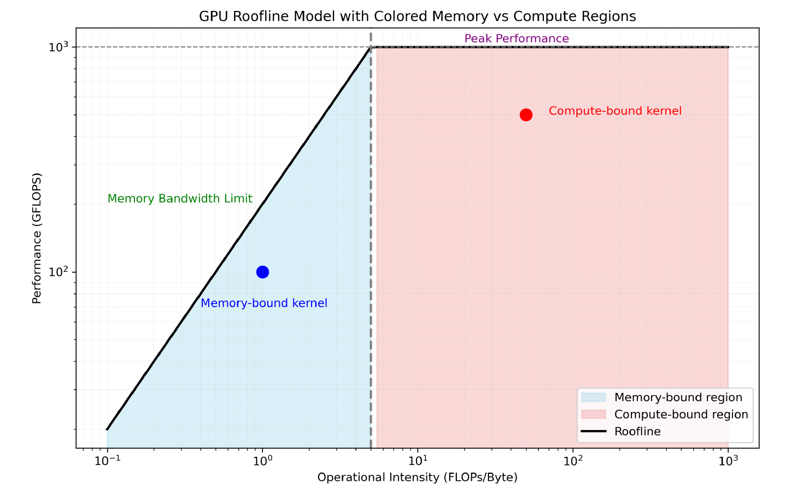
在 GPU Roofline 模型中，我们可以把它分成两个区域：内存受限区域(斜线区域)和计算受限区域。 斜线（Memory-Bound 区域） 代表了 显存带宽瓶颈。这条斜线并不是凭空画出来的，而是由 GPU 的硬件物理显存带宽通过数学公式严格计算出来的。
1.3.1. 数学公式¶
斜线的本质是一条正比例函数直线：
其中：
- y 轴 (\text{Performance})：计算性能，单位通常为 \text{FLOP/s}（如 TFLOPS）。
- x 轴 (\text{Arithmetic Intensity})：计算强度，定义为 每访问一个字节（Byte）显存所执行的浮点运算次数，单位是 \text{FLOPs/Byte}。
- 斜率 (m)：该 GPU 的 峰值显存带宽（Peak Memory Bandwidth），单位是 \text{Bytes/s}（或 \text{GB/s}）。
因此，这条斜线的方程就是：
1.3.2. 推导过程¶
我们可以从硬件物理限制的角度来推导为什么性能会与带宽成正比：
- 时间下限由显存带宽决定： 假设你的内核（Kernel）总共需要从显存读写 Q 个字节（Bytes）的数据。在理想情况下，硬件能达到的最大显存带宽为 B_{peak}（例如 A100 的显存带宽约为 2.0 \text{ TB/s}）。那么，数据搬运所需要的 绝对时间下限 为：
- 性能的计算公式： 内核总共执行了 W 次浮点运算（FLOPs），其实际运行性能（Performance）定义为总运算量除以执行时间：
- 结合带宽限制： 因为实际执行时间 T 不可能小于硬件理论极限 T_{min}（即 T \ge T_{min}），所以性能存在一个上限：
由于 \frac{W}{Q} 正好就是 计算强度（Intensity），所以：
这就是斜线的来源：在显存带宽被榨干的前提下，你的计算性能完全由“喂数据”的速度（带宽）和当前算法的“数据复用率”（计算强度）线性决定。
1.3.3. 斜线与水平线的交点¶
斜线不会无限向上延伸。当计算强度增加到一定程度时，GPU 上的算力单元（ALU / Tensor Cores）达到了物理极限，性能不再随着计算强度的增加而上升，从而转为水平线。
这个转折点被称为 拐点（Ridge Point），它的计算强度横坐标为：
- 左侧（斜线区）：属于 Memory-Bound（访存受限）。优化手段是减少访存、提高数据复用（如使用共享内存 Shared Memory 缓存、算子融合）。
- 右侧（水平线区）：属于 Compute-Bound（算力受限）。优化手段是提升计算指令的并行度、使用 Tensor Core、降低数据精度（如 FP16/BF16/INT8）。
1.4 屋顶线测试程序¶
1.4.1 multi_point_roofline.py¶
import numpy as np
from numba import cuda
# 1. 极低算术强度：朴素向量加法（纯内存受限区 Memory-bound）
@cuda.jit
def memory_bound_kernel(a, b, c):
idx = cuda.grid(1)
if idx < a.size:
# 每个线程：读2个数，做1次加法，写1个数（算术强度极低）
c[idx] = a[idx] + b[idx]
# 2. 中等算术强度：加入简单的算术折算（混合区）
@cuda.jit
def mixed_bound_kernel(a, b, c):
idx = cuda.grid(1)
if idx < a.size:
val = a[idx] + b[idx]
# 增加一些浮点计算，但不增加访存
for _ in range(16):
val = val * np.float32(1.0001) + np.float32(0.0001)
c[idx] = val
# 3. 高算术强度：密集计算核（计算受限区 Compute-bound）
@cuda.jit
def compute_bound_kernel(a, b, c):
idx = cuda.grid(1)
if idx < a.size:
val = a[idx] + b[idx]
# 大量循环计算，高度复用数据，极高算术强度
for _ in range(256):
val = val * val + val - np.float32(1.234)
val = val / (val + np.float32(2.0))
c[idx] = val
def main():
n = 2_000_000
a = np.ones(n, dtype=np.float32)
b = np.ones(n, dtype=np.float32)
c = np.zeros(n, dtype=np.float32)
d_a = cuda.to_device(a)
d_b = cuda.to_device(b)
d_c = cuda.to_device(c)
threads_per_block = 256
blocks_per_grid = (n + threads_per_block - 1) // threads_per_block
print("Running multi-point roofline kernels...")
# 依次执行三种不同算术强度的 Kernel，NCU 会为每一个 Kernel 单独采集并生成一个点
for _ in range(10):
memory_bound_kernel[blocks_per_grid, threads_per_block](d_a, d_b, d_c)
mixed_bound_kernel[blocks_per_grid, threads_per_block](d_a, d_b, d_c)
compute_bound_kernel[blocks_per_grid, threads_per_block](d_a, d_b, d_c)
cuda.synchronize()
print("All kernels executed successfully.")
if __name__ == "__main__":
main()
1.4.2 结果分析¶
我们需要用ncu来运行程序：
ncu --section SpeedOfLight_RooflineChart -o multi_point_report python multi_point_roofline.py
然后用ncu-ui打开它。
1.4.2.1 memory_bound_kernel¶
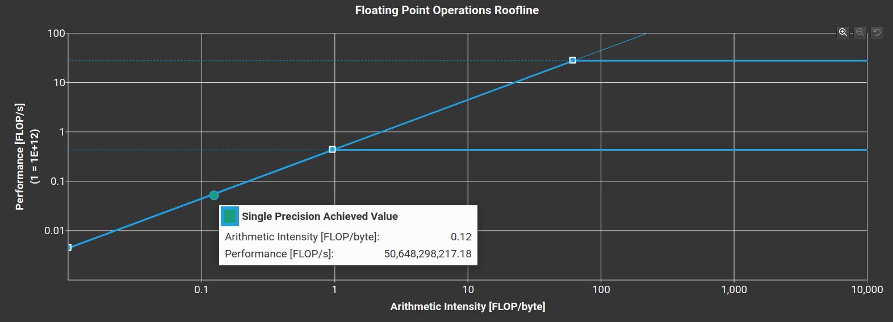
1.4.2.2 mixed_bound_kernel¶
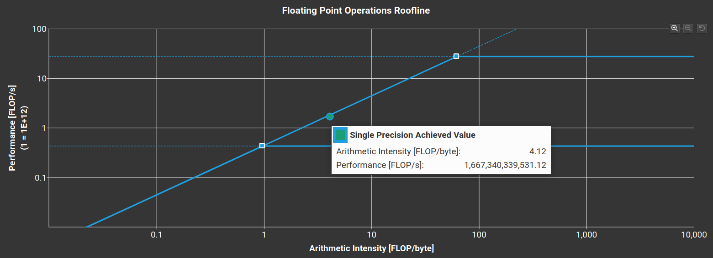
1.4.2.3 compute_bound_kernel¶
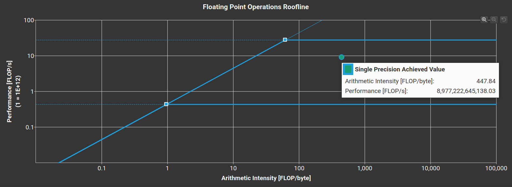
思考题：为什么compute_bound_kernel的算术强度高达447，它的GFLOPS(8.9TFLOPS)离屋顶(27TFLOPS)还是差很远？
1.5 GPU内存层次结构¶
GPU 是一种延迟隐藏（latency hiding）架构，有大量可供执行的线程，这意味着它在理论上可以容忍较长的内存访问延迟。尽管如此，过多的内存调用仍会导致部分线程失速或等待，进而导致某些流式多处理器（SM）处于闲置状态。CUDA 架构提供了几种其他的内存访问方法，我们可以利用它们来解决这种内存瓶颈问题。
数据从 CPU 内存传输到被 SM 利用进行处理的路径如下图所示。在这里，我们可以看到数据元素在到达 SM 核心进行计算之前的完整旅程。每种内存的带宽都有着数量级上的差异，访问它们的延迟也是如此：
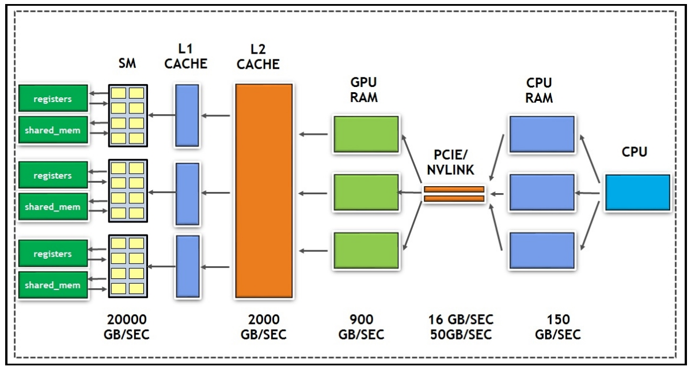
下图展示了最新 GPU 架构中存在的不同类型的内存层级结构。对于应用程序开发人员而言，每种内存都可能具有不同的容量大小、延迟、吞吐量和可见性：
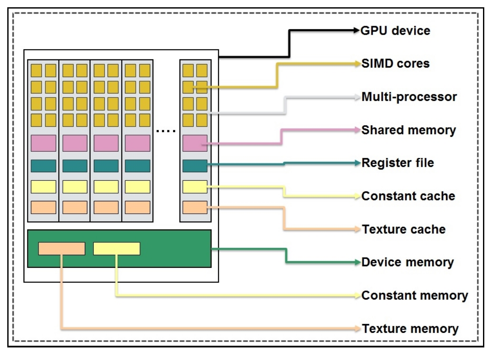
2. 全局内存(Global memory)/设备内存(device memory)¶
全局内存(Global memory)，也称为设备内存 (device memory)。全局内存是所有数据从 CPU 内存复制过来的暂存区（Staging area），因此实现该内存的最佳利用至关重要。
全局内存或设备内存对内核（Kernel）中的 所有线程都是可见的。同时，该内存对 CPU 也是可见的。
程序员需要分别使用 cudaMalloc 和 cudaFree 来显式地管理其内存的分配与释放。使用 cudaMalloc 分配的数据会被声明为 __device__。对于所有使用 cudaMemcpy API 从 CPU 传输过来的数据，全局内存是其默认的暂存区。
3. 合并与非合并的全局内存访问¶
3.1 基本概念¶
为了高效地利用全局内存，理解 CUDA 编程模型中线程束（Warp）的概念至关重要。线程束是流式多处理器（SM）中线程调度和执行的基本单元。一旦一个线程块（Block）被分配给某个 SM，它就会被划分为以 32 个线程为单位的组合，这个组合被称为线程束。这是 CUDA 编程中的基本执行单元。
为了演示线程束的概念，我们来看一个例子。如果两个线程块被分配给一个 SM，且每个线程块包含 128 个线程，那么一个线程块内的线程束数量就是 128 / 32 = 4 个线程束，而该 SM 上的线程束总数则是 4 \times 2 = 8 个线程束。
下图展示了 CUDA 线程块是如何在 GPU 的 SM 上进行划分和调度的：
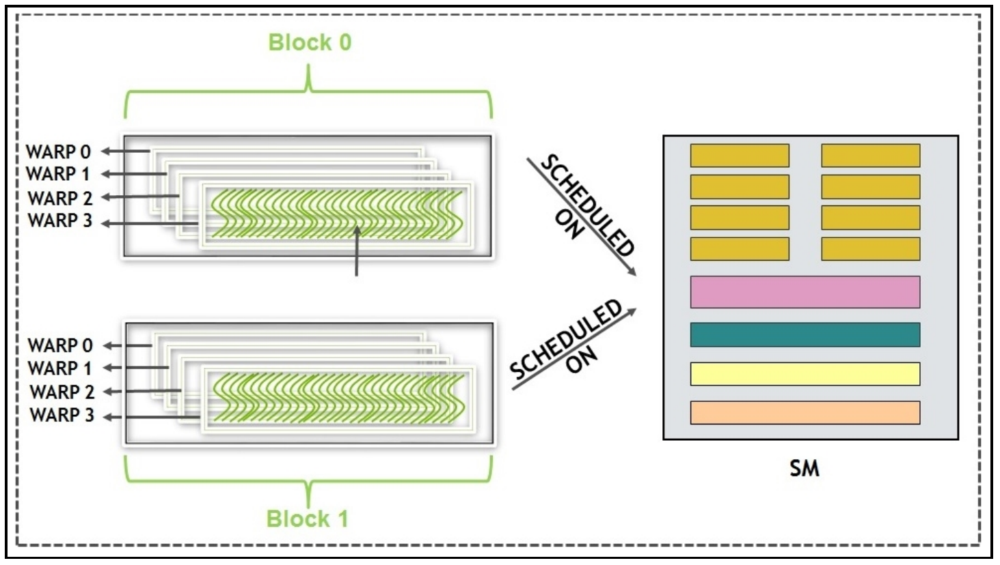
线程块和线程束如何在 SM 及其核心上进行调度，在很大程度上取决于具体架构。目前，我们可以先忽略调度过程中的具体技术细节。在所有可用的线程束中，那些下一条指令所需操作数已准备就绪的线程束将进入“具备执行资格（eligible）”的状态。随后，GPU 将根据其运行该 CUDA 程序时的调度策略，选择符合条件的线程束来执行。被选中的线程束中的所有线程都会执行同一条指令。
CUDA 遵循单指令多线程（SIMT, Single Instruction, Multiple Thread）模型，即在同一个时间节点上，一个线程束内的所有线程都会获取并执行相同的指令。
为了最优化地利用全局内存的访问，内存访问应当是 合并的（coalesced）。合并访问与非合并访问的区别如下：
- 合并的全局内存访问（Coalesced global memory access）： 连续的内存访问在物理地址上是相邻的。
- 非合并的全局内存访问（Uncoalesced global memory access）： 连续的内存访问在物理地址上是不相邻的。
下图更详细地展示了这种访问模式的一个示例。
图的 左侧 展示了合并访问（coalesced access）的情形：线程束中的各线程访问的是相邻的数据，因此最终只需执行一次 32 宽度的合并操作，并且只会触发 1 次缓存缺失（cache miss）。
图的 右侧 则展示了另一种场景：线程束内各线程的访问是随机（非连续）的，这可能会导致需要调用 32 次宽度为 1 的操作，从而可能引发 32 次缓存缺失，这是最坏的一种情况：
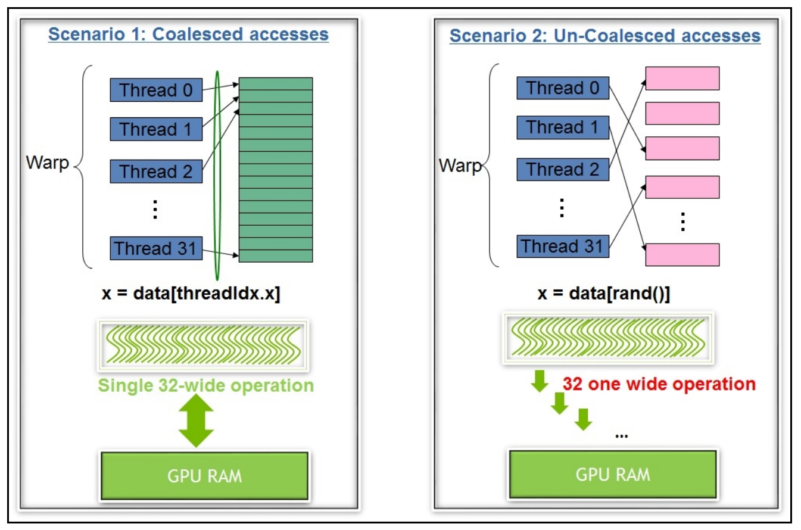
为了进一步理解这一概念，我们需要了解数据是如何通过缓存行（cache lines）从全局内存传输过来的。
3.2 场景 1：线程束请求 32 个对齐且连续的 4 字节数据¶
此时，所有请求的地址都落在同一个缓存行内，只需进行一次 32 宽度的操作。总线利用率达到了 100%，也就是说，我们充分利用了从全局内存取入缓存的所有数据，没有浪费任何带宽。
具体过程如下图所示：
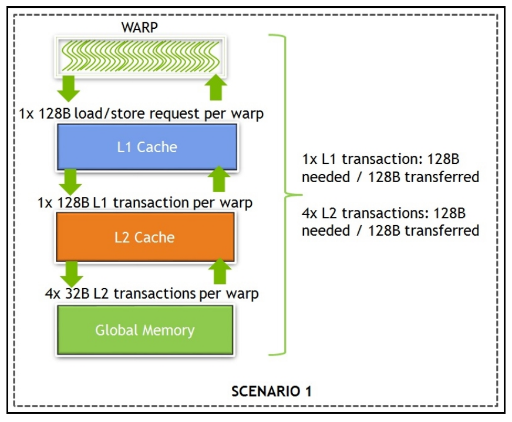
3.2.1. 线程束发出请求（WARP → L1 Cache）¶
- 内容：
1x 128B load/store request per warp - 解释： 一个线程束包含 32 个线程。在场景 1 中，每个线程请求 4 字节（
float）的数据，且这些数据在物理内存中是 连续且对齐 的。因此，整个线程束在同一时刻发出的总数据请求量刚好是 32 \times 4\text{ B} = 128\text{ B}。
3.2.2. L1 缓存层面的事务（L1 Cache → L2 Cache）¶
- 内容：
1x 128B L1 transaction per warp以及右侧对应的1x L1 transaction: 128B needed / 128B transferred - 解释： 既然线程束只需要这 128 字节的内容，L1 缓存与 L2 缓存之间就只发生 1 次 128 字节的事务（Transaction）。
- 效率： 核心需要的是 128B，实际传输的也是 128B。没有任何字节被浪费，利用率 100%。
3.2.3. L2 缓存与全局内存层面的事务（L2 Cache → Global Memory）¶
- 内容：
4x 32B L2 transactions per warp以及右侧对应的4x L2 transactions: 128B needed / 128B transferred - 解释： GPU 的 L2 缓存和全局内存（显存）之间的硬件数据传输通常是以 32 字节 为基本单元（颗粒度）进行的。
- 效率： 为了凑齐 L1 所需的 128 字节，L2 缓存向全局内存发起了 4 次 32 字节的事务（4 \times 32\text{ B} = 128\text{ B}）。同样地，需要的 128B 与实际传输的 128B 完全吻合。
3.2.4💡 核心总结¶
该图说明了在理想的合并访问（Coalesced Access）状态下：
- 32 个线程的吞吐需求被 完美合并 为了一个连续的 128 字节大包。
- 无论是 L1 还是 L2 缓存，“实际传输的数据”全部都是“线程所需要的数据”。
- 这种模式下，硬件带宽被压榨到了极致，没有任何无效数据占用总线，从而能跑出最高的性能。
3.3 场景 2：线程束请求 32 个离散的 4 字节数据¶
尽管整个线程束同样只需要 128 字节的数据，但由于访问是随机离散的，最终会执行 32 次宽度为 1 的数据获取。这导致在缓存缺失（Cache Miss）时，会有高达 32 \times 128\text{ 字节} 的数据在总线上传输。
具体过程如下图所示：
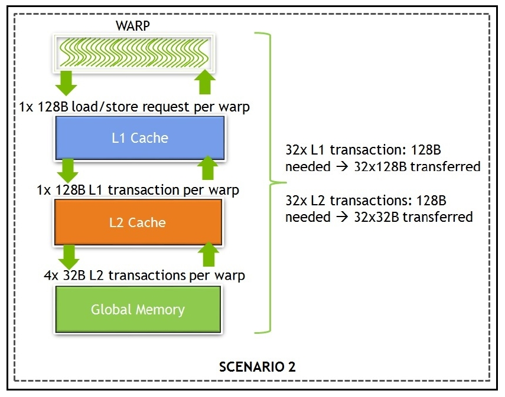
3.3.1. 线程束发出请求（WARP → L1 Cache）¶
- 内容：
1x 128B load/store request per warp - 解释： 线程束中的 32 个线程由于执行相同的指令，依然在同一时刻发出了总计 128 字节的数据请求（每个线程要 4 字节）。但是，这些数据在物理内存中是完全零散、互不相邻的。
3.3.2. L1 缓存层面的“惨状”（L1 Cache → L2 Cache）¶
- 内容： 右侧对应的
32x L1 transaction: 128B needed → 32x128B transferred - 解释： 每一个线程要的数据都落在了 不同的 L1 缓存行（每行 128 字节）中。
- 为了满足这 32 个线程的离散需求，L1 缓存不得不发起了 32 次独立的事务（Transaction）。
- 带宽灾难： 计算核心实际只需要 128 字节（128B needed），但硬件却在总线上被迫传输了 32 \times 128\text{ B} = 4,096\text{ B} 的数据。这意味着其中 96.8% 的数据全都是没用的废包。
3.3.3. L2 缓存与全局内存层面的“惨状”（L2 Cache → Global Memory）¶
- 内容： 右侧对应的
32x L2 transactions: 128B needed → 32x32B transferred - 解释： 同样的道理，在向最底层的全局内存（显存）索要数据时，由于 32 个地址完全不连续，无法进行合并，L2 缓存必须发起 32 次独立的 L2 事务（每次读取最小硬件颗粒度 32 字节）。
- 带宽灾难： 核心只需要 128 字节，显存和 L2 之间却来回传输了 32 \times 32\text{ B} = 1,024\text{ B} 的数据。
3.3.4 总结与对比¶
- 场景 1（合并）： 传输 128B \rightarrow 刚好拿到 128B \rightarrow 利用率 100%。
- 场景 2（非合并）： 为了拿 128B \rightarrow 总线塞进了 4096B \rightarrow 有效利用率 3.1%（若散落得更宽，利用率会进一步跌破 1%）。
4. AoS vs SoA¶
如我们学习的，线程束（Warp）内的各线程如何访问全局内存中的数据至关重要。为了最优化地利用全局内存，提高访问的合并性（coalescing）是非常关键的。
为此，我们可以采用多种策略。其中一种策略就是 改变数据布局（data layout）以提升局部性（locality）。
4.1 基本概念¶
在高性能计算、GPU 编程中，AoS（Array of Structures，结构体数组）和 SoA（Structure of Arrays，数组结构体）是两种最根本的 数据布局（Data Layout）策略。
选择 AoS 还是 SoA，直接决定了程序在访问内存时是 合并访问（Coalesced） 还是 非合并访问（Uncoalesced），进而对性能产生数十倍的影响。
4.1.1. 什么是 AoS (Array of Structures)？¶
- 概念： 先定义一个包含多个属性的 结构体（Structure），然后再创建一个该结构体的 数组（Array）。
- 面向对象思维： 这是最符合人类直觉的“面向对象”写。比如我们要表示一组 3D 粒子（包含
x, y, z坐标）：
// 定义单个粒子的结构体
struct Particle {
float x;
float y;
float z;
};
// 创建一个结构体数组
Particle particles[N];
- 内存布局： 在物理内存中，数据是按粒子个体紧凑排列的：
4.1.2. 什么是 SoA (Structure of Arrays)？¶
- 概念： 先定义一个结构体，但结构体内部的每一个成员本身都是一个 数组（Array）。
- 面向数据思维： 这种方式打破了“个体”的观念，将相同属性的数据归类到一起：
// 定义一个包含多个数组的结构体
struct ParticlesSoA {
float x[N];
float y[N];
float z[N];
};
// 创建一个实例
ParticlesSoA particles;
- 内存布局： 在物理内存中，相同属性的数据被连续放置在一起：
4.1.3. GPU 视角下的 AoS 与 SoA¶
为什么在 GPU 编程中大家更倾向于使用 SoA？我们用 CUDA 线程束（Warp）的访问模式来模拟：
场景：计算所有粒子的 X 轴坐标更新
假设一个 Warp 中的 32 个线程，各自负责处理一个粒子，此时它们同时去内存中读取各自粒子的 x 值（线程 0 读 x0，线程 1 读 x1……）。
- 使用 AoS 时：
线程 0 需要
x0，线程 1 需要x1。但是在物理内存中，x0和x1之间隔着y0和z0。 这导致 32 个线程请求的地址在内存中是 非连续（Stride） 的。正如前面讨论的，这会触发 非合并访问，L1/L2 缓存不得不发射多个硬件事务，吞吐量暴跌。 - 使用 SoA 时：
在内存中，
x0, x1, x2, ... x31是 绝对连续且对齐 地排列在一起的。 当 Warp 的 32 个线程同时发出请求时，硬件完美地将它们 合并为一个 128 字节的单次内存事务。总线利用率达到 100%，性能拉满。
4.1.4. 对比与选型指南¶
虽然 SoA 在 GPU 上大获全胜，但 AoS 并非一无是处。它们在不同架构下的优缺点对比如下：
| 特性 | AoS (结构体数组) | SoA (数组结构体) |
|---|---|---|
| 内存连续性 | 单个物体的不同属性连续 | 多个物体的相同属性连续 |
| CPU 友好度 | 高（利于 CPU 的高级缓存和独立对象操作，符合空间局部性） | 中（如果同时需要 xyz，会引发多次不连续的内存跳跃） |
| GPU 友好度 | 低（导致跨步/非合并访问，浪费带宽） | 极高（完美触发 SIMD/SIMT 的 合并访问） |
| 可读性与维护 | 符合直觉，易于面向对象编程 | 相对抽象，代码编写略显臃肿 |
4.1.5 总结¶
- 在 CPU 上： 如果你的算法经常需要完整操作某一个对象的全部属性（比如单独更新粒子 0 的
x, y, z），AoS 通常伴随着更好的 CPU Cache 局部性。 - 在 GPU/SIMD 上： 如果你的算法是让大量线程批量处理同一种属性（比如所有线程同时算
x），毫不犹豫选择 SoA。在 AI 基础设施、大模型算子开发、图像处理中，SoA 是绝对的主流。
4.2 图像处理的例子¶
完整的代码在http://172.16.20.21:3000/lili-lab/aos-vs-soa。
4.2.1 aos.cu¶
4.2.1.1 定义结构体¶
struct Coefficients_AOS
{
int r;
int b;
int g;
int hue;
int saturation;
int maxVal;
int minVal;
int finalVal;
};
它的构造代码为：
std::vector<Coefficients_AOS> h_aos_data(img_size);
//初始化h_aos_data
size_t total_bytes = img_size * sizeof(Coefficients_AOS);
cudaMemcpy(d_x, h_aos_data.data(), total_bytes, cudaMemcpyHostToDevice);
4.2.1.2 核函数¶
__global__ void complicatedCalculation(Coefficients_AOS *data)
{
int i = blockIdx.x * blockDim.x + threadIdx.x;
int grayscale = (data[i].r + data[i].g + data[i].b) / data[i].maxVal;
int hue_sat = data[i].hue * data[i].saturation / data[i].minVal;
data[i].finalVal = grayscale * hue_sat;
}
这里只是模拟的一些计算，用于演示。
4.2.2 soa.cu¶
4.2.1 定义结构体¶
struct Coefficients_SOA
{
int *r;
int *b;
int *g;
int *hue;
int *saturation;
int *maxVal;
int *minVal;
int *finalVal;
};
它的构造代码：
std::vector<int> h_r(img_size);
std::vector<int> h_g(img_size);
std::vector<int> h_b(img_size);
std::vector<int> h_hue(img_size);
std::vector<int> h_saturation(img_size);
std::vector<int> h_maxVal(img_size, 3);
std::vector<int> h_minVal(img_size, 2);
cudaMemcpy(d_x.r, h_r.data(), bytes, cudaMemcpyHostToDevice);
cudaMemcpy(d_x.g, h_g.data(), bytes, cudaMemcpyHostToDevice);
cudaMemcpy(d_x.b, h_b.data(), bytes, cudaMemcpyHostToDevice);
cudaMemcpy(d_x.hue, h_hue.data(), bytes, cudaMemcpyHostToDevice);
cudaMemcpy(d_x.saturation, h_saturation.data(), bytes, cudaMemcpyHostToDevice);
cudaMemcpy(d_x.maxVal, h_maxVal.data(), bytes, cudaMemcpyHostToDevice);
cudaMemcpy(d_x.minVal, h_minVal.data(), bytes, cudaMemcpyHostToDevice);
cudaMemcpy(d_x.finalVal, h_finalVal.data(), bytes, cudaMemcpyHostToDevice);
4.2.2 核函数¶
__global__ void complicatedCalculation(Coefficients_SOA data)
{
int i = blockIdx.x * blockDim.x + threadIdx.x;
int grayscale = (data.r[i] + data.g[i] + data.b[i]) / data.maxVal[i];
int hue_sat = data.hue[i] * data.saturation[i] / data.minVal[i];
data.finalVal[i] = grayscale * hue_sat;
}
4.2.3 比较它们的区别¶
4.2.3.1. 内存物理布局的物理差异（Memory Layout）¶
这两段代码在显存（Global Memory）中铺开的形式完全不同：
- AoS (结构体数组)： 内存是以“像素（或数据点）”为单位连续紧凑排列的。
data[0]的所有属性存完，才轮到data[1]。- 物理内存顺序：
[r0,b0,g0,hue0,sat0,max0,min0,final0],[r1,b1,g1,hue1,sat1,max1,min1,final1]...
- SoA (数组结构体)： 内存是以“通道（或属性）”为单位连续排列的。
- 所有像素的
r存完，才轮到所有像素的b。 - 物理内存顺序：
data.r -> [r0, r1, r2, ...]；data.g -> [g0, g1, g2, ...]...
4.2.3.2. Warp 访存行为与总线吞吐¶
这是决定它们性能差距的根本原因。我们以线程束（Warp，32个线程）同时执行第一行计算（获取 r 通道）为例：
1. ❌ AoS 版本的惨状（非合并访问 / Strided Access）¶
int grayscale = (data[i].r + ...) / ...;
- 行为： 线程 0 需要
data[0].r，线程 1 需要data[1].r。 - 物理距离： 在物理显存中，
data[0].r和data[1].r之间被b0, g0, hue0...等 7 个int（共 28 字节）硬生生隔开。这意味着相邻线程请求的地址跨步（Stride）长达 32 字节。 - 硬件代价： 32 个线程的地址完全散落在不同的缓存行（Cache Line）中。GPU 无法进行合并访存，硬件不得不发射多达 32 次内存事务去显存里“抠”数据。总线有效带宽利用率暴跌至 3% 到 12% 左右，GPU 算力被迫在长达数百个时钟周期的访存延迟中原地等待（Stall）。
2. SoA 版本的完美表现（合并访问 / Coalesced Access）¶
int grayscale = (data.r[i] + ...) / ...;
- 行为： 线程 0 需要
data.r[0]，线程 1 需要data.r[1]。 - 物理距离： 在物理显存中，
r0, r1, r2, ... r31是 8字节/4字节绝对连续对齐 排列的。 - 硬件代价： 当 Warp 里的 32 个线程同时发出请求时，GPU 的内存控制器（Memory Controller）打眼一看：“太棒了，这 32 个地址正好凑成一段连续的 128 字节空间！”。硬件直接将其 合并为一个单一的 128 字节内存事务（Single Memory Transaction）。总线利用率直达 100%，瞬间喂饱计算核心。
3. 参数传递与寻址机制（为什么一个传指针，一个传值）¶
这两段代码在参数传递上的差异也是由于它们的架构决定的：
// AoS：参数是全局内存指针
__global__ void complicatedCalculation(Coefficients_AOS *data)
- 原因： 每个线程必须通过基地址
data加上偏移量[i]来定位到属于自己的那个大结构体实体。寻址公式类似：地址 = data + i * sizeof(Coefficients_AOS)。
// SoA：参数是结构体本身（值传递）
__global__ void complicatedCalculation(Coefficients_SOA data)
- 原因：
data本身只是个“控制面板”，里面存的是各个独立数组在显存里的首地址。通过值传递，这几个首地址（指针）会被直接塞进 GPU 极快的 常量内存（Constant Memory），并广播给所有线程。线程直接拿来和[i]组合：r的地址 = data.r + i * sizeof(int)。省去了一次在显存中读取结构体本身的开销。
4.2.3.3 📊 总结对比表¶
| 维度 | AoS 版本 (Coefficients_AOS *data) |
SoA 版本 (Coefficients_SOA data) |
|---|---|---|
| 内存连续性 | 空间局部性属于 单个像素的各个通道 | 空间局部性属于 所有像素的相同通道 |
| GPU 总线利用率 | 极低 (因非合并访问导致总线充斥废流量) | 极高 (100%) (完美触发合并访问) |
| 参数传递代价 | 传递 1 个指针 (8 字节)，但片上寻址可能更繁琐 | 传递 8 个指针 (64 字节) 到常量内存，广播效率极高 |
| 寄存器压力 | 相对较低，但等待显存周期极长 | 每个独立通道寻址会略微占用更多寄存器，但被访存优势碾压 |
| PCIe 回传开销 | 必须拉回整个结构体（包含没被修改的数据） | 可以精确只拉回变动了的 finalVal 通道，省带宽 |
4.2.4 实际测试¶
在RTX 4090 Laptop上的测试结果：
lili@itcast:~/codes/aos-vs-soa/release$ ./aos && ./soa
AoS Data successfully initialized and copied to GPU.
GPU kernel time: 19.5049ms
SoA Data successfully initialized and copied to GPU.
GPU kernel time: 9.76992ms
在CloudStudio的T4上：
lili@9e6eea3534d4:~/codes/aos-vs-soa/release$ ./aos && ./soa
AoS Data successfully initialized and copied to GPU.
GPU kernel time: 30.3468ms
SoA Data successfully initialized and copied to GPU.
GPU kernel time: 14.4663ms
在CloudStuido的A100上：
lili@222921d972ef:~/codes/aos-vs-soa/release$ ./aos && ./soa
AoS Data successfully initialized and copied to GPU.
GPU kernel time: 6.6945ms
SoA Data successfully initialized and copied to GPU.
GPU kernel time: 4.1201ms
在古老的一个GPU上：
lili@lili-Precision-7720:~/codes/aos-vs-soa/release$ ./aos && ./soa
AoS Data successfully initialized and copied to GPU.
GPU kernel time: 102.704ms
SoA Data successfully initialized and copied to GPU.
GPU kernel time: 40.5036ms
4.3 💡 结论¶
在传统的 CPU 编程或游戏引擎开发中，AoS 符合人类面向对象的直觉（Object-Oriented），对 CPU Cache 很友好；但在 GPU 硬件架构（SIMT/SIMD） 下，SoA 拥有绝对统治级的性能优势。编写高性能大模型算子、图像处理核函数时，应当无脑选择 SoA。
5. 使用ncu进行Profiling¶
5.1 Profiling工具¶
前面我们对比AoS和SoA，发现内存的访问方式对于性能有很大的影响。如果我们的程序有非合并的内存访问，我们应该尽量优化它，把它变成合并的内存访问。但是问题在于：我们怎么知道我们的程序存在非合并的内存访问？当然这一方面要靠我们的知识和经验，通过分析代码发现潜在的问题。但是知识和经验并不总是正确的，我们需要一种更加科学的方法，那就是使用Profiling工具。这里我们会使用Nvidia提供的NVIDIA Nsight Compute(简称ncu)来分析CUDA核函数的性能问题。ncu是一个非常强大的分析工具，和它类似的还有一个NVIDIA Nsight Systems(简称nsys)工具。
在 NVIDIA 的英伟达高性能计算（HPC）和深度学习深度优化工具箱中，NCU（Nsight Compute） 和 NSYS（Nsight Systems） 是最核心的两位“全家桶”成员。
简单来说：NSYS 看的是“宏观全局”（System-wide），而 NCU 看的是“微观单点”（Kernel-level）。
5.1.1 📊 核心区别一览表¶
| 特性 | NSYS (NVIDIA Nsight Systems) | NCU (NVIDIA Nsight Compute) |
|---|---|---|
| 定位 | 系统级 性能分析工具（粗粒度） | 内核级 性能分析工具（细粒度） |
| 视角 | 宏观：时间线（Timeline） | 微观：硬件计数器（Hardware Counters） |
| 分析对象 | CPU 与 GPU 的交互、线程同步、CUDA API 调用、内存拷贝（HtoD/DtoH）、多卡通信（NCCL） | 单个特定的 CUDA Kernel（核函数）内部执行情况 |
| 核心指标 | 运行时间、等待延迟、API 耗时占比、GPU 利用率断层 | 显存带宽利用率（SOL）、计算单元利用率、寄存器用量、合并访问（Coalesced）、线程束（Warp）状态 |
| 性能开销 | 极低（低开销采样，可在生产/大模型训练中长时间运行） | 极高（硬件重放机制，会导致内核重复执行，程序变慢数倍） |
5.1.2 🎬 形象的比喻¶
- NSYS 就像是“全景监控摄像机” 它帮你盯着整个工厂（程序）。你能看到原材料（数据）什么时候从 CPU 运到 GPU，GPU 什么时候开始干活，干完活是不是在偷懒（空闲），或者是不是在等待其他 GPU（通信瓶颈）。它用来找出“到底是哪一段最慢”。
- NCU 则是“高倍显微镜” 当你通过 NSYS 发现某个特定的 CUDA 算子（Kernel）干活特别慢时，你就需要用 NCU 把这个算子单独拎出来放到显微镜下。它会告诉你：这个算子里的线程是不是在打架？显存访问是不是没合并？计算单元（ALU/Tensor Core）有没有喂饱？
5.1.3 🛠️ 典型应用场景对比¶
5.1.3.1 什么时候用 NSYS？（找瓶颈、看大局）¶
- 大模型训练/推理优化：你想知道一段三层 Transformer 的代码里，Dataloader 读数据（CPU）有没有卡住 GPU？
- 异步流水线优化：检查
cudaMemcpyAsync是否成功和 Kernel 计算实现了重叠（Overlap）。 - 多卡通信：检查 NCCL
AllReduce耗时是否过长，GPU 是不是都在傻傻地等待同步。 - 识别关键路径：在几千个 Kernel 中，找出哪个 Kernel 的绝对执行时间总和最长。
5.1.3.2 什么时候用 NCU？（改代码、抠性能）¶
- 写出了一款新算子：你自己用 CUDA C++ 或 Triton 写了一个 FlashAttention 算子，想知道它达到了硬件理论极限（Roofline Model）的百分之多少。
- 硬件指标调优：优化访存。比如分析 L1/L2 缓存命中率，解决非合并访问（Uncoalesced Access）。
- 资源配置调整：调校每个 Block 的线程数（Block Size）、共享内存（Shared Memory）用量，以提高 GPU 的活跃线程束并发度（Occupancy）。
5.1.4 🔄 推荐的标准性能优化工作流¶
在实际的 AI Infra 或高性能计算开发中，我们通常不会一上来就用 NCU，而是遵循 “先 NSYS，后 NCU” 的 Top-Down 流程：
- 第一步（NSYS 寻医）：运行
nsys profile ./my_program，打开时间线查看全局。发现程序整体变慢是因为某个名为VMM_Kernel的算子占了 GPU 70% 的总时间。 - 第二步（NCU 治病）：锁定目标后，精准对该 Kernel 运行
ncu --kernel-name VMM_Kernel -o profile_res ./my_program。 - 第三步（看图改代码）：在
ncu-ui中发现该 Kernel 的内存利用率（Memory SOL）是 90%，但计算利用率极低，且报了 Uncoalesced global accesses。 - 第四步（修复验证）：把代码从 AoS 改成 SoA，重新编译用 NCU 压测，确认报告中的过度扇区（Excessive Sectors）消失，最终再用 NSYS 确认整体 Timeline 缩短。
不过因为我们这里只是两个简单的核函数，直接用ncu就可以了。
5.1.5 过期的nvprof¶
如果看一些比较老的资料，可能还会看到nvprof(以及与之配套的nvvp)。不过新的GPU和CUDA都不支持它们了，除非你在用非常古老版本的GPU和GUDA，而ncu和nsys无法支持，才考虑用nvprof。
5.2 使用ncu来Profile aos.cu的问题¶
5.2.1 编译加入行号¶
为了在ncu的分析报告里找到哪些代码行有问题，我们需要在编译的时候加入行号信息。有很多方法可以实现，可以修改CMakeLists.txt：
# 方法一：直接添加编译选项
target_compile_options(aos PRIVATE $<$<COMPILE_LANGUAGE:CUDA>: -lineinfo >)
# 方法二：或者全局开启
set(CMAKE_CUDA_FLAGS "${CMAKE_CUDA_FLAGS} -lineinfo")
不过我不想为了Profiling而修改CMakeLists.txt，那么可以使用命令行传递编译选项：
lili@itcast:~/codes/aos-vs-soa/release-lineinfo$ cmake -DCMAKE_CUDA_FLAGS="-lineinfo" -DCMAKE_BUILD_TYPE=Release ..
5.2.2 使用ncu运行程序¶
首先运行aos：
lili@itcast:~/codes/aos-vs-soa/release-lineinfo$ ncu --set full -o aos ./aos
==PROF== Connected to process 167729 (/home/lili/codes/aos-vs-soa/release-lineinfo/aos)
AoS Data successfully initialized and copied to GPU.
==PROF== Profiling "complicatedCalculation" - 0: 0%....50%....100% - 39 passes
GPU kernel time: 2495.74ms
==PROF== Disconnected from process 167729
==PROF== Report: /home/lili/codes/aos-vs-soa/release-lineinfo/aos.ncu-rep
然后运行soa：
lili@itcast:~/codes/aos-vs-soa/release-lineinfo$ ncu --set full -o soa ./soa
==PROF== Connected to process 167982 (/home/lili/codes/aos-vs-soa/release-lineinfo/soa)
SoA Data successfully initialized and copied to GPU.
==PROF== Profiling "complicatedCalculation" - 0: 0%....50%....100% - 38 passes
GPU kernel time: 1363.31ms
==PROF== Disconnected from process 167982
==PROF== Report: /home/lili/codes/aos-vs-soa/release-lineinfo/soa.ncu-rep
5.3 WSL的设置¶
在 WSL2 (Windows Subsystem for Linux) 环境下进行 GPU Profile（使用 nsys 或 ncu），由于它本质上是通过宿主机（Windows）的 DirectX 内核驱动（dxgkrnl）桥接来访问 GPU 硬件的，因此会受到 底层的安全限制和虚拟化隔离。
要让 nsys 和 ncu 能够在 WSL 内部顺利读取到 NVIDIA 显卡的底层硬件计数器（Hardware Counters），你必须完成以下 三个核心设置：
5.3.1. 宿主机权限放开¶
出于安全考虑，NVIDIA 驱动默认限制了非管理员用户/虚拟化环境读取硬件性能计数器。如果不开启此项，你在 WSL 里运行 ncu 会直接报错（例如：ERR_NVGPUCTRPERM 或权限不足）。
在 Windows 宿主机上执行：
- 在 Windows 任务栏搜索框输入 NVIDIA Control Panel（NVIDIA 控制面板） 并打开。
- 在左侧菜单栏中找到 Developer（开发者） ➡️ 点击 Manage Performance Counters（管理性能计数器）。
- 将选项切换为："Allow access to the performance counters to all users"（允许所有用户访问性能计数器）。
- 点击右下角的 Apply（应用）。
注意：设置后一定要重启Windows(当然也得重启WSL了)，否则不会生效！！！
5.3.2. WSL 内部内核参数调整¶
nsys 在收集 CPU 时间线和部分系统级事件时，依赖 Linux 内核的 perf 子系统。WSL2 默认的内核参数对非 root 用户有严格的安全限制。
在 WSL Linux 终端内执行：
运行以下命令，将内核的 perf_event 预测限制降到最低：
# 临时生效（重启 WSL 后失效）：
sudo sysctl -w kernel.perf_event_paranoid=1
# 永久生效：
echo "kernel.perf_event_paranoid=1" | sudo tee -a /etc/sysctl.conf
sudo sysctl -p
💡 参数说明：默认值通常是
2或3，这会阻止nsys收集采样数据。将其改为1允许用户态程序收集 CPU/GPU 的大部分性能事件。
5.3.3 🔄 快速验证配置是否成功¶
完成上述设置后，你可以运行一个极简的测试命令来验证：
1. 验证 NSYS：¶
现在某个环境安装pytorch，然后执行：
nsys profile --stats=true \
-x true \
-o test_nsys_wsl \
python -c "import torch; print(torch.cuda.is_available()); torch.randn(100, 100, device='cuda') @ torch.randn(100, 100, device='cuda')"
(如果能成功输出统计表格且没有报错，说明全局拓扑与时间线追踪正常)
2. 验证 NCU：¶
ncu --metrics sm__sass_data_bytes_mem_shared_op_ld.sum -o test_ncu_wsl python -c "import torch; torch.randn(10, 10, device='cuda') + 1"
(如果能够顺利生成报告而没有弹出 Permission denied 或 ERR_NVGPUCTRPERM 相关的错误提示，说明硬件计数器已完全解锁)
5.4 启动ncu-ui¶
因为分析结果(aos.ncu-rep/soa.ncu-rep)在服务器上，而ncu-ui需要图形界面，因此需要在一个有ui的机器上来查看分析报告。我们用的ncu是CUDA 12.6自带的，我们可以查看它的版本：
$ ncu --version
NVIDIA (R) Nsight Compute Command Line Profiler
Copyright (c) 2018-2024 NVIDIA Corporation
Version 2024.3.0.0 (build 34567288) (public-release)
不同版本的输出格式可能不兼容，所以最好在查看报告的机器上安装完全一样的版本，这可以在Nsight Compute Release History找到所有的历史版本。我这里选择的是Nsight Compute 2024.3，根据我的系统(Linux)下载安装文件，安装到某个位置就可以了。如果是其它的操作系统，应该也是类似的。
5.4.1 查看aos.ncu-rep¶
可以把文件复制到本地，也可以使用"file"->"open remote file"直接选择远程文件(但是要求配置remote Connection)。
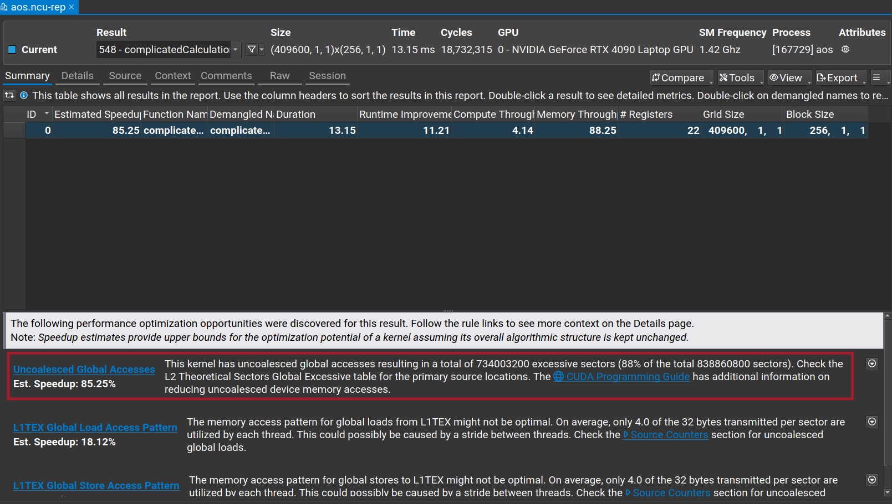
可以看到它找到有3个可以优化的点，其中最值得优化(预期提升85%)是：
This kernel has uncoalesced global accesses resulting in a total of 734003200 excessive sectors (88% of the total 838860800 sectors). Check the L2 Theoretical Sectors Global Excessive table for the primary source locations. The CUDA Programming Guide has additional information on reducing uncoalesced device memory accesses.
也就是说它发现了很多未合并的内存访问，导致88%的内存访问是无效的。
另外我们可以点击Source标签页查看有问题的代码。注意：我们的ncu-ui运行在本地，所以它会找不到源代码，我们需要把它复制到本地，然后点击Resolve选择aos.cu文件。
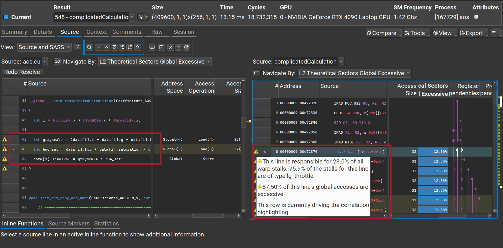
从图中可以看到，它找到了有问题的代码行。当然我们这个核函数很短，看不出使用ncu的好处。如果代码非常长，那么快速定位问题就非常关键了。
5.4.2 查看soa.ncu-rep¶
同样的，我们查看soa的profile。
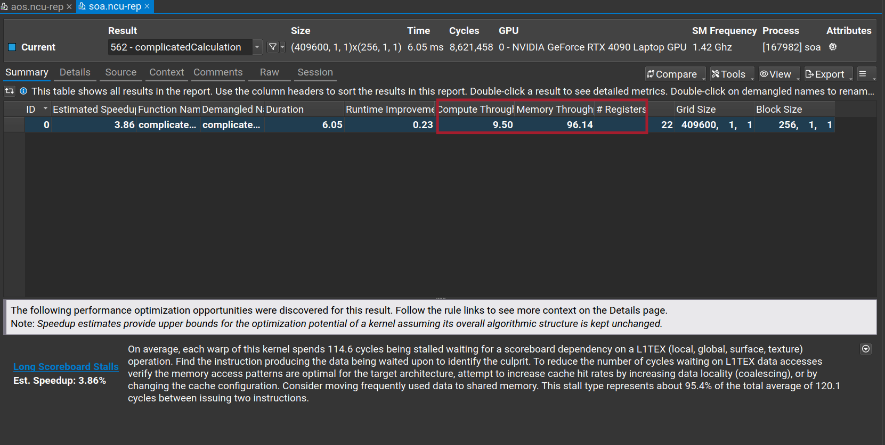
这一次，没有了非合并内存访问的问题。而且虽然它也找到了一个可能的优化点，但是预期的加速只有3.86%。这说明优化的空间并不是太大了。
5.5 云服务器¶
如果是CloudStudio这样的云服务器，它其实是用一个容器来运行的，所以没有权限读取硬件计数器，也就无法用ncu进行profile。
一个小问题：NCHW和NHWC¶
6. CUDA内存类型¶
到目前为止，我只使用了全局内存(其实还有寄存器，只不过我们可能还没有意识到)。
CUDA设备包含几种类型的内存，可以帮助程序员改善计算与全局内存访问的比率。下图显示了这些CUDA设备内存。在图的底部，我们看到全局内存和常量内存。这两种类型的内存都可以由主机进行写入（W）和读取（R）。全局内存也可以由设备进行写入和读取，而常量内存则支持设备进行低延迟、高带宽的只读访问。后面我们会通过卷积的例子介绍常量内存。
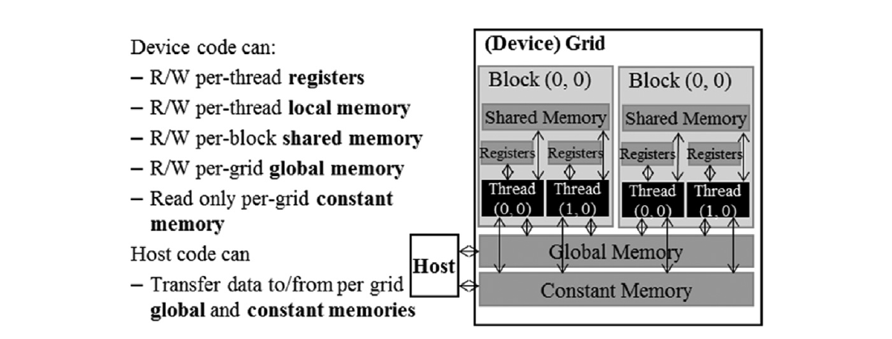
另一种类型的内存是本地内存，它也可以被读取和写入。本地内存实际上位于全局内存中，并具有类似的访问延迟，但它不跨线程共享。每个线程都有自己的一部分全局内存，它将其用作自己的私有本地内存，其中放置了线程私有但无法在寄存器中分配的数据。这些数据包括静态分配的数组、溢出的寄存器和线程调用堆栈的其他元素。
寄存器和共享内存是芯片上的内存。驻留在这些类型的内存中的变量可以以非常高的速度以高度并行的方式访问。寄存器分配给各个线程；每个线程只能访问自己的寄存器。典型的核函数通常使用寄存器来保存对每个线程私有的频繁访问的变量。共享内存分配给线程块；块中的所有线程都可以访问为该块声明的共享内存变量。共享内存是线程通过共享其输入数据和中间结果来合作的有效手段。通过在CUDA内存类型中声明CUDA变量，CUDA程序员决定了变量的可见性和访问速度。
6.1 寄存器变量¶
在 CUDA 编程中，寄存器（Register）是 GPU 中速度最快、延迟最低的内存空间。理解寄存器变量的工作原理对于编写高性能的 CUDA 核函数（Kernel）至关重要。
6.1.1. 什么是 CUDA 寄存器变量？¶
当你在 CUDA 核函数（__global__ 或 __device__ 函数）中声明一个局部变量时，编译器会 默认 将其分配到该线程的寄存器中。
- 生命周期：与所属的线程（Thread）相同。
- 可见性：仅对声明它的当前线程可见（私有）。
- 速度：与 CPU 寄存器类似，基本可以在 1 个时钟周期内完成读写。
6.1.2 示例代码¶
__global__ void myKernel(float *d_out) {
// 以下变量都会被分配到该线程的寄存器中
int tid = threadIdx.x;
float local_val = 5.0f;
d_out[tid] = local_val * tid;
}
6.1.3. 寄存器变量的“溢出”（Local Memory Spill）¶
虽然寄存器极快，但它的 数量是有限的。
每个 NVIDIA GPU 架构对每个线程块（Thread Block）或每个线程能分配的寄存器数量都有严格的上限（例如，每个线程最多 255 个寄存器）。
如果你的核函数满足以下条件，编译器会将部分变量移到本地内存（Local Memory）中：
- 局部变量太多，超出了硬件限制。
- 使用了 无法在编译时确定索引的局部数组。例如：
__global__ void badKernel() {
float arr[10]; // 如果用变量去索引它（如 arr[i]），它大概率会溢出到本地内存
}
6.1.4. 寄存器数量与利用率（Occupancy）的权衡¶
这是 GPU 优化中最核心的博弈之一：
- 更多的寄存器 = 单个线程更强：每个线程可以处理更复杂的计算。
- 更少的并发线程 = 硬件利用率降低：由于每个 SM（流式多处理器）的寄存器总量是固定的，如果每个线程占用的寄存器太多，SM 能同时容纳的活动线程数（Occupancy）就会减少，导致 GPU 无法有效地隐藏内存延迟。
6.1.5. 如何控制和查看寄存器使用情况？¶
6.1.5.1 查看寄存器使用量¶
在编译 CUDA 代码时，可以向 nvcc 编译器传递 --ptxas-options=-v 参数。
编译时会输出类似以下的信息：
ptxas info : Used 32 registers, 64 bytes smem, 384 bytes cmem[0]
这能清晰地告诉你每个线程消耗了多少个寄存器，以及是否有局部内存溢出（0 bytes lmem 表示没有溢出）。
6.1.5.2 限制寄存器使用¶
如果你发现寄存器占用过多导致占用率太低，可以通过以下两种方式强制限制寄存器数量：
- 编译器全局限制：
在编译命令中加入
-maxrregcount=32，限制所有核函数每个线程最多使用 32 个寄存器。 - 核函数精确限制（推荐）：
使用
__launch_bounds__关键字。
// 告诉编译器，这个核函数每个 Block 最多 256 个线程，且希望每个 SM 至少运行 2 个 Block
__global__ void __launch_bounds__(256, 2) myKernel(...) {
// 编译器会自动优化寄存器分配，以满足上述吞吐量要求
}
6.1.5.3 __launch_bounds__¶
为什么 __launch_bounds__(maxThreadsPerBlock, minBlocksPerSM) 中，第二个参数是“最少（min）”？
minBlocksPerSM 表示期望每个 SM 至少能够驻留的 Block 数量。编译器根据 maxThreadsPerBlock 和 minBlocksPerSM，推导出 Kernel 的寄存器使用预算，并据此调整寄存器分配策略。
如果初始寄存器使用量超过预算，编译器通常会尝试降低寄存器使用量，但可能因此增加指令数量或产生 Register Spilling。如果初始寄存器使用量低于预算，编译器也可能适当增加寄存器使用量，以减少指令数量并改善指令延迟隐藏。
1. 编译器的逻辑：从“最少 Block” 推导 “最多寄存器”¶
硬件的限制是死板的：每个 SM 的寄存器总数是固定的（例如 Hopper/Blackwell 架构或 Ampere 架构，每个 SM 通常有 64K 个 32-bit 寄存器）。
如果你的代码写了 __launch_bounds__(256, 2)：
- 计算总线程数：你告诉编译器，一个 Block 最多有 256 个线程。既然希望每个 SM 至少 能跑 2 个 Block，那么这个 SM 必须能同时容纳：
- 反推寄存器上限：SM 的寄存器总量是 65,536 个。为了保证这 512 个线程同时存在，每个线程能分到的 最大寄存器数量 就是：
结论：你通过设置“最少跑 2 个 Block”，成功逼迫编译器把每个线程的寄存器使用量 压减到 128 个以内。
2. 为什么第一个参数是“最多（max）”？¶
反过来，第一个参数 maxThreadsPerBlock 为什么是“最多”？
因为在实际调用核函数时（即 myKernel<<<grid, block>>>），你传入的线程块大小是 动态的（比如你可能传入 128，也可能传入 256）。
编译器在编译阶段并不知道你实际会传多少，但它必须按照 最极端、最吃资源的情况 去计算。
- 你承诺“最多 256”，编译器就会按 256 来预估资源。
- 如果你实际运行时传入了 128 线程，那更好，资源更充裕，绝对不会出问题。
- 但如果你实际运行时传入了 512 线程，超过了你承诺的“最多 256”，程序就会直接报 Launch Failure 错误。
6.2 共享变量¶
在 CUDA 编程中，共享内存（Shared Memory，常被称为共享变量） 是仅次于寄存器的超高性能内存空间。如果说寄存器是每个线程（Thread）的“私人背包”，那么共享内存就是同一个线程块（Thread Block）内所有线程共同拥有的 “公共会议室”。
6.2.1. 什么是 CUDA 共享变量？¶
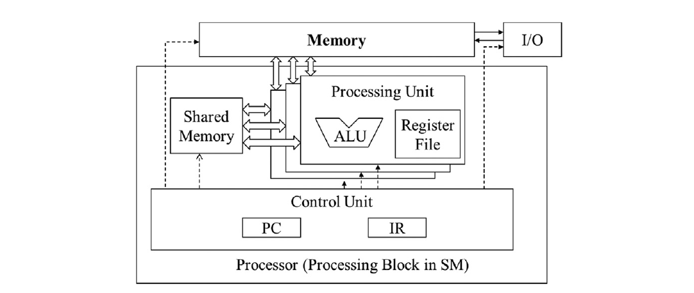
上图显示了CUDA设备中的共享内存和寄存器。尽管两者都是芯片上的内存，但在功能和访问成本上有很大差异。共享内存设计为驻留在处理器芯片上的内存空间的一部分。当处理器访问驻留在共享内存中的数据时，它需要执行内存加载操作，就像访问全局内存中的数据一样。但是，由于共享内存位于芯片上，它的访问延迟和吞吐量比全局内存要低得多。由于需要执行加载操作，共享内存的延迟和带宽低于寄存器。在计算机体系结构术语中，共享内存是一种暂存器(scratchpad)内存形式。
CUDA中共享内存和寄存器之间的一个重要区别是，驻留在共享内存中的变量可以被块中的所有线程访问。这与寄存器数据相反，后者是线程私有的。也就是说，共享内存旨在支持块中的线程之间的高效、高带宽的数据共享。CUDA设备SM通常使用多个处理单元允许多个线程同时进行进度。块中的线程可以分布在这些处理单元上。因此，这些CUDA设备中共享内存的硬件实现通常设计为允许多个处理单元同时访问其内容，以支持块中线程之间的高效数据共享。
6.2.2 核心特性¶
- 作用域（Scope）：对同一个 Thread Block 内的所有线程可见。
- 生命周期（Lifetime）：与所属的 Thread Block 相同。当该 Block 执行完毕，共享内存中的数据就会被释放。
- 主要用途：
- 线程间通信：同一个 Block 内的线程可以通过共享内存交换数据。
- 全局内存折叠（Memory Coalescing）/ 缓存：把需要重复读取的全局内存（Global Memory）数据一次性加载到共享内存中，后续所有线程直接从共享内存读取，避免反复压榨显存带宽。
6.2.3. 共享变量的声明方式¶
在 CUDA 中，我们使用 __shared__ 关键字来声明共享变量。主要有两种声明形式：
6.2.3.1 静态共享内存（Static Allocation）¶
在编译时就确定了大小。大小写死在核函数内部：
__global__ void staticSharedKernel(float *d_in, float *d_out) {
// 声明一个大小为 256 的浮点数数组，整个 Block 的线程共享这个数组
__shared__ float s_array[256];
int tid = threadIdx.x;
// 协作加载：每个线程从显存读一个数据，存入共享内存
s_array[tid] = d_in[tid];
// 必须同步！确保所有线程都把数据写完了
__syncthreads();
// 后续可以安全地读取共享内存
d_out[tid] = s_array[255 - tid];
}
6.2.3.2 动态共享内存（Dynamic Allocation）¶
在编译时大小未知，运行时在启动核函数（核函数调用的第三个参数）时动态指定：
// 核函数内部：使用 extern 关键字，且不要指定数组大小
__global__ void dynamicSharedKernel(float *d_in, float *d_out) {
extern __shared__ float s_array[]; // 动态大小
int tid = threadIdx.x;
s_array[tid] = d_in[tid];
// ...
}
// 主机端（Host）调用：通过第三个参数传递字节数（Byte）
int shared_size = 256 * sizeof(float); // 1024 字节
dynamicSharedKernel<<<grid, block, shared_size>>>(d_in, d_out);
6.2.4. 共享内存的核心痛点1：线程同步¶
共享内存虽好，但在使用时要注意线程同步。
由于同一个 Block 内的线程是并行（更准确地说是以 Warp 为单位交错）执行的，如果线程 A 正在往共享内存写数据，线程 B 立刻去读，就可能读到脏数据。
- 解决办法：在任何“写-读”或“写-写”操作之间，必须显式调用
__syncthreads();。这个函数是一个 硬件栅栏（Barrier），它会阻塞当前 Block 内的所有线程，直到所有人都在此集结，才允许向下执行。
6.2.5 存储体冲突（Bank Conflict）¶
当一个 Warp 中的多个线程同时访问 Shared Memory，而这些线程访问的地址映射到了同一个 Bank，且访问的不是同一个地址时，就可能发生 Bank Conflict。
Bank Conflict 会导致原本可以并行完成的 Shared Memory 访问被拆分成多个事务（Transaction），从而降低访存效率。
6.2.5.1. Shared Memory 为什么要划分 Bank？¶
假设 GPU 的 Shared Memory 是一个整体，如果所有线程同时访问 Shared Memory 中不同位置的数据，硬件需要有足够的访问带宽。NVIDIA 将 Shared Memory 划分成多个独立的 Bank，让多个 Bank 可以并行处理访问请求。对于现代 NVIDIA GPU，通常可以这样理解：
- Shared Memory 有 32 个 Bank。
- 每个 Bank 的宽度通常为 4 Bytes。
- 一个 Warp 有 32 个线程。
- 每个线程可以同时访问一个 32-bit 数据。
Bank 的编号为：
假设 Shared Memory 中存储的是一个 int 数组：
__shared__ int smem[1024];
因为每个 int 占 4 Bytes，每个 Bank 宽度也是 4 Bytes，所以相邻的数组元素会映射到相邻的 Bank。
映射关系为：
例如：
| 数组索引 | Bank 编号 |
|---|---|
| smem[0] | 0 |
| smem[1] | 1 |
| smem[2] | 2 |
| ... | ... |
| smem[30] | 30 |
| smem[31] | 31 |
| smem[32] | 0 |
| smem[33] | 1 |
| smem[34] | 2 |
也就是说，smem[0] 和 smem[32] 都映射到 Bank 0。注意：Bank 是按地址映射的，不是每个数组只能使用一个 Bank。
6.2.5.2. Bank Conflict 是怎么产生的？¶
假设一个 Warp 中有 32 个线程：
int tid = threadIdx.x;
int value = smem[tid];
每个线程访问一个元素：
根据前面的映射公式：
得到：
| Thread | 访问地址 | Bank |
|---|---|---|
| 0 | smem[0] | 0 |
| 1 | smem[1] | 1 |
| 2 | smem[2] | 2 |
| 3 | smem[3] | 3 |
| ... | ... | ... |
| 30 | smem[30] | 30 |
| 31 | smem[31] | 31 |
32 个线程分别访问 32 个不同的 Bank。
因此，32 个线程的访问可以并行完成，没有 Bank Conflict。
情况一：没有 Bank Conflict¶
int value = smem[tid];
映射关系：
32 个线程分别访问 Bank 0～31。
可以理解为：
Thread: 0 1 2 3 4 ... 31
Bank: 0 1 2 3 4 ... 31
↓ ↓ ↓ ↓ ↓ ↓
B0 B1 B2 B3 B4 ... B31
情况二：发生 2-way Bank Conflict¶
现在改成：
int value = smem[tid * 2];
每个线程访问的数组索引是：
Bank 编号：
具体结果：
| Thread | 数组索引 | Bank |
|---|---|---|
| 0 | 0 | 0 |
| 1 | 2 | 2 |
| 2 | 4 | 4 |
| 3 | 6 | 6 |
| 4 | 8 | 8 |
| ... | ... | ... |
| 15 | 30 | 30 |
| 16 | 32 | 0 |
| 17 | 34 | 2 |
| ... | ... | ... |
| 31 | 62 | 30 |
你会发现：
- Thread 0 和 Thread 16 都访问 Bank 0；
- Thread 1 和 Thread 17 都访问 Bank 2；
- Thread 2 和 Thread 18 都访问 Bank 4；
- 一直到 Thread 15 和 Thread 31。
32 个线程实际上只使用了 16 个 Bank，每个 Bank 有两个不同地址的访问请求。
这就是 2-way Bank Conflict。
原本一次可以完成的访问，需要拆成两次：
第 1 次：Thread 0～15
第 2 次：Thread 16～31
因此，理论上需要两次 Bank 访问才能完成这组请求。
情况三：发生 32-way Bank Conflict¶
再看：
int value = smem[tid * 32];
Bank 映射：
所有线程都访问 Bank 0：
| Thread | 数组索引 | Bank |
|---|---|---|
| 0 | 0 | 0 |
| 1 | 32 | 0 |
| 2 | 64 | 0 |
| 3 | 96 | 0 |
| ... | ... | ... |
| 31 | 992 | 0 |
32 个线程访问同一个 Bank 中的 32 个不同地址。这就是 32-way Bank Conflict。在这个例子中，访问需要分成 32 个串行的 Bank 服务步骤。
注意一个例外：如果多个线程访问的是同一个地址，硬件可以通过 Broadcast（广播）机制满足请求，不会产生这种 Bank Conflict。
例如：
int value = smem[0];
32 个线程都读取 smem[0]，这不是 32-way Bank Conflict，而是一次广播读取。
6.2.5.3. 如何消除 Bank Conflict？¶
在实际的高性能内核编写中，解决 Bank Conflict 有两大常规武器：
-
填充（Padding）：
- 在定义共享内存大小时，故意在每行后面多加几个“幽灵”元素（例如把列宽从 32 改为 33，即
shared[32][33]）。 - 这样一来，原本上下对齐在同一个 Bank 上的列地址就会被 错开，完美避开冲突。
- 在定义共享内存大小时，故意在每行后面多加几个“幽灵”元素（例如把列宽从 32 改为 33，即
-
改变访问模式（Swizzling）：
- 通过数学公式对线程的访存索引进行重新排列，确保同一时刻 Warp 内的线程访问的总是不同的连续 Bank。
这里理解起来可能有些困难，后面的矩阵转置的例子我们会更加详细的分析 Bank Conflict以及使用 Padding 解决冲突的方法。
6.2.6 总结¶
| 特性 | 寄存器（Register） | 共享内存（Shared Memory） | 全局内存（Global Memory） |
|---|---|---|---|
| 物理位置 | 芯片内部（On-chip） | 芯片内部（On-chip） | 芯片外部（Off-chip 显存） |
| 速度/延迟 | 极快（~1 周期） | 极快（~1-few 周期） | 慢（数百周期） |
| 可见范围 | 单个线程（Thread） | 整个线程块（Block） | 全局所有线程（Grid） |
| 分配上限 | 每个线程最多 255 个 | 每个 Block 通常 48KB-100KB+ | 几个G 到 几十G（显存容量） |
共享内存就像是 GPU 留给程序员的“手动挡缓存”。在现代 CUDA 编程中（尤其是 Tensor Core 算子开发、Triton 算子编写），如何通过 Tiling（分块） 技术将数据优雅地搬运到共享内存，并完美避开 Bank Conflict，是衡量一个 AI 基础设施/算子优化工程师功底的核心指标。
6.3 常见变量类型的声明方式和生命周期¶
| 变量声明 (Variable declaration) | 内存类型 (Memory) | 作用域 (Scope) | 生命周期 (Lifetime) |
|---|---|---|---|
| 除数组之外的自动变量 (局部变量) | 寄存器 (Register) | 线程 (Thread) | 网格 (Grid) |
| 自动数组变量 (局部数组) | 局部内存 (Local) | 线程 (Thread) | 网格 (Grid) |
__device__ __shared__ int SharedVar; |
共享内存 (Shared) | 线程块 (Block) | 网格 (Grid) |
__device__ int GlobalVar; |
全局内存 (Global) | 网格 (Grid) | 应用程序 (Application) |
__device__ __constant__ int ConstVar; |
常量内存 (Constant) | 网格 (Grid) | 应用程序 (Application) |
6.4 Numba CUDA使用共享变量和查看寄存器使用数量¶
6.4.1 代码¶
代码在numba-cuda-lab/kernel_reg_smem.py。
from numba import cuda
import numpy as np
BLOCK_SIZE = 256
SM_SIZE = 128
# 1. 编写 Kernel，并在内部申请 Shared Memory
@cuda.jit
def sample_kernel(d_out, n):
# 在 Kernel 内部静态申请 Shared Memory (大小为 256 个 float32)
s_arr = cuda.shared.array(SM_SIZE, dtype=np.float32)
tid = cuda.threadIdx.x
bid = cuda.blockIdx.x
i = bid * cuda.blockDim.x + tid
# 简单的 Shared Memory 读写操作
if tid < SM_SIZE:
s_arr[tid] = float(tid)
cuda.syncthreads()
if i < n:
d_out[i] = s_arr[tid % SM_SIZE] * np.float32(2.0)
def main():
if not cuda.is_available():
print("No CUDA GPU found!")
return
# 获取当前 GPU 设备对象
dev = cuda.get_current_device()
print(f"=== 当前 GPU 设备信息: {dev.name.decode('utf-8') if isinstance(dev.name, bytes) else dev.name} ===")
# 打印影响 Occupancy 的核心硬件限制指标
try:
print(f"\n[硬件限制指标]")
print(f" - 多处理器数量 (SM Count): {dev.MULTIPROCESSOR_COUNT}")
print(f" - 每个 Warp 的线程数 (Warp Size): {dev.WARP_SIZE}")
print(f" - 每个 Block 允许的最大线程数: {dev.MAX_THREADS_PER_BLOCK}")
print(f" - 每个 SM 允许的最大驻留线程数: {dev.MAX_THREADS_PER_MULTIPROCESSOR}")
print(f" - 每个 SM 的最大 32-bit 寄存器数: {dev.MAX_REGISTERS_PER_MULTIPROCESSOR}")
print(f" - 每个 Block 的最大 Shared Memory: {dev.MAX_SHARED_MEMORY_PER_BLOCK} bytes")
except Exception as e:
print(f"部分硬件属性读取时出错: {e}")
# 准备输入输出数据
n = 10240
threads_per_block = BLOCK_SIZE
blocks_per_grid = (n + threads_per_block - 1) // threads_per_block
d_out = cuda.device_array(n, dtype=np.float32)
# 2. 先配置并执行一次 Kernel（触发类型推导与 JIT 编译）
sample_kernel[blocks_per_grid, threads_per_block](d_out, n)
cuda.synchronize()
# 3. 编译完成后，直接查询当前编译变体的硬件资源占用（无需传参）
try:
regs = sample_kernel.get_regs_per_thread()
shmem_static = sample_kernel.get_shared_mem_per_block()
local_mem = sample_kernel.get_local_mem_per_thread()
max_threads = sample_kernel.get_max_threads_per_block()
print(f"\n[当前 Kernel 实际资源占用与编译指标]")
print(f" - 每个线程使用的寄存器数量 (Regs/Thread): {regs}")
print(f" - 静态 Shared Memory 占用 (Static ShMem/Block): {shmem_static} bytes")
print(f" - 每个线程的 Local Memory 占用 (Spill): {local_mem} bytes")
print(f" - 受寄存器/ShMem限制的最大线程块大小: {max_threads}")
except Exception as e:
print(f"\n获取指标时发生异常: {e}")
print("\nKernel 执行并统计成功！")
if __name__ == "__main__":
main()
6.4.2 代码解析¶
6.4.2.1. 全局宏定义¶
BLOCK_SIZE = 256
SM_SIZE = 128
BLOCK_SIZE: 定义了每个 Thread Block 分配的线程数（256 个线程，正好是 8 个 Warp）。SM_SIZE: 定义了在 Kernel 内部静态申请的 Shared Memory 元素数量（128 个float32）。
6.4.2.2. CUDA Kernel 编写与 Shared Memory 申请¶
@cuda.jit
def sample_kernel(d_out, n):
# 在 Kernel 内部静态申请 Shared Memory (大小为 128 个 float32，共 128 * 4 = 512 字节)
s_arr = cuda.shared.array(SM_SIZE, dtype=np.float32)
tid = cuda.threadIdx.x
bid = cuda.blockIdx.x
i = bid * cuda.blockDim.x + tid
# 简单的 Shared Memory 读写操作：前 128 个线程负责写入索引值
if tid < SM_SIZE:
s_arr[tid] = float(tid)
# 栅栏同步：确保所有线程都写完后，后面的代码才能安全读取 Shared Memory
cuda.syncthreads()
# 全局数据写入：超出 SM_SIZE 的线程通过取余（tid % SM_SIZE）复用共享内存数据
if i < n:
d_out[i] = s_arr[tid % SM_SIZE] * np.float32(2.0)
cuda.shared.array(SM_SIZE, dtype=np.float32)：在共享内存（Shared Memory）中静态分配一块内存空间，所有属于同一个 Block 的线程都可以访问它。cuda.syncthreads()：经典的线程块内同步屏障。必须保证所有线程对s_arr的写入操作全部完成，后续读取才不会发生数据竞态（Data Race）。np.float32(2.0)：在 Numba CUDA 内核中显式使用标量类型转换，确保生成的机器码类型严格对齐，避免隐式类型提升带来的性能损耗。
6.4.2.3. 硬件环境与限制指标探测¶
dev = cuda.get_current_device()
print(f"=== 当前 GPU 设备信息: {dev.name.decode('utf-8') ...} ===")
# 打印多处理器数量、Warp 大小、Block 最大线程数、SM 最大寄存器数、SM 最大 Shared Memory 等
- 通过
cuda.get_current_device()拿到目标 GPU（如 RTX 4090 Laptop）的硬件物理参数。 - 这些指标（如
MAX_REGISTERS_PER_MULTIPROCESSOR、MAX_SHARED_MEMORY_PER_BLOCK）是评估 Occupancy（硬件占用率） 的上限边界。
6.4.2.4. 触发 JIT 编译¶
sample_kernel[blocks_per_grid, threads_per_block](d_out, n)
cuda.synchronize()
- Numba 采用的是 惰性编译（Lazy Compilation）。在代码运行到这里之前，
sample_kernel只是一个 Python 装饰器包装的符号。 - 只有当它第一次带参数被方括号
[grid, block]和圆括号(d_out, n)调用时，Numba 才会根据传入参数的类型（float32[:],int32）触发内部的 LLVM + NVRTC 编译，将 Python 代码真正翻译成 GPU 的机器码（SASS）。 cuda.synchronize()确保主机（Host）等待 GPU 异步执行完毕。
6.4.2.5. 资源统计与内省（Introspection）¶
regs = sample_kernel.get_regs_per_thread()
shmem_static = sample_kernel.get_shared_mem_per_block()
local_mem = sample_kernel.get_local_mem_per_thread()
max_threads = sample_kernel.get_max_threads_per_block()
get_regs_per_thread()：获取每个线程实际消耗的 32-bit 寄存器数量。寄存器是 GPU 上最宝贵的资源，直接决定了每个 SM 能同时驻留多少个 Warp（即寄存器对 Occupancy 的限制）。get_shared_mem_per_block()：获取该 Kernel 每个 Block 消耗的静态共享内存字节数（128 \times 4 = 512 字节）。get_local_mem_per_thread()：检查是否有寄存器溢出（Register Spilling）到本地内存（Local Memory / 显存）。如果该值大于 0，说明寄存器不够用了，性能会大幅下降。get_max_threads_per_block()：由当前寄存器和共享内存占用反推出来的、受硬件资源约束的最大 Block 线程数限制。
6.4.2.6 这段代码的作用¶
这是编写高性能 CUDA 内核的标准调试工作流的第一步：
- 写完内核 \rightarrow 跑一次（触发编译） \rightarrow 读取
regs和shmem。 - 结合前面用
ncu收集的报告，观察寄存器占用是否合理（例如 RTX 4090 上如果寄存器用得过多，会导致 SM 驻留的 Warp 数下降，掩盖内存访问延迟的能力变差）。
6.4.2 执行结果¶
(numba-cuda-lab) lili@itcast:~/codes/numba-cuda-lab$ python kernel_reg_smem.py
=== 当前 GPU 设备信息: NVIDIA GeForce RTX 4090 Laptop GPU ===
[硬件限制指标]
- 多处理器数量 (SM Count): 76
- 每个 Warp 的线程数 (Warp Size): 32
- 每个 Block 允许的最大线程数: 1024
- 每个 SM 允许的最大驻留线程数: 1536
- 每个 SM 的最大 32-bit 寄存器数: 65536
- 每个 Block 的最大 Shared Memory: 49152 bytes
/home/lili/codes/numba-cuda-lab/.venv/lib/python3.13/site-packages/numba_cuda/numba/cuda/dispatcher.py:748: NumbaPerformanceWarning: Grid size 40 will likely result in GPU under-utilization due to low occupancy.
warn(errors.NumbaPerformanceWarning(msg))
[当前 Kernel 实际资源占用与编译指标]
- 每个线程使用的寄存器数量 (Regs/Thread): {(Array(float32, 1, 'C', False, aligned=True), int64): 12}
- 静态 Shared Memory 占用 (Static ShMem/Block): {(Array(float32, 1, 'C', False, aligned=True), int64): 512} bytes
- 每个线程的 Local Memory 占用 (Spill): {(Array(float32, 1, 'C', False, aligned=True), int64): 0} bytes
- 受寄存器/ShMem限制的最大线程块大小: {(Array(float32, 1, 'C', False, aligned=True), int64): 1024}
Kernel 执行并统计成功！
7. 使用共享变量优化矩阵转置¶
7.1 代码实现¶
7.1.1 最简单的实现¶
__global__ void matrix_transpose_naive(int *input, int *output)
{
int indexX = threadIdx.x + blockIdx.x * blockDim.x;
int indexY = threadIdx.y + blockIdx.y * blockDim.y;
int input_idx = indexY * N + indexX;
int output_idx = indexX * N + indexY;
// 此时从全局内存合并读取，但写入全局内存是非合并的（跨步很大）
output[output_idx] = input[input_idx];
}
__global__ void matrix_transpose_naive_2(int *input, int *output)
{
int indexX = threadIdx.x + blockIdx.x * blockDim.x;
int indexY = threadIdx.y + blockIdx.y * blockDim.y;
int input_idx = indexX * N + indexY;
int output_idx = indexY * N + indexX;
// 写入是合并访问，但是读取不是
output[output_idx] = input[input_idx];
}
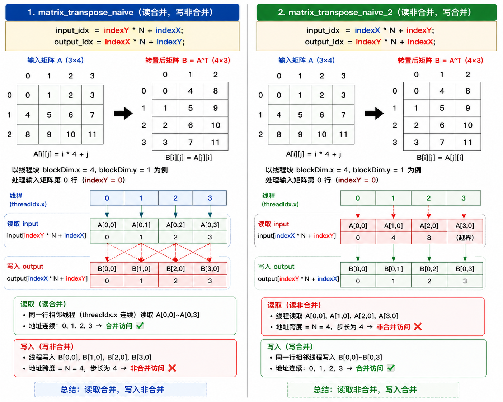
7.1.1.1. 核心映射对比表¶
为了清晰理解，首先要明确：在 CUDA 的二维线程块中，Warp（线程束）内连续的 32 个线程，其 threadIdx.x 是连续递增的，而 threadIdx.y 是完全相同的。
因此，哪一个一维索引中包含了 threadIdx.x，哪一个操作就是连续（合并）的；哪一个一维索引中把 threadIdx.x 乘以了矩阵宽度 N，哪一个操作就是 跨步（非合并）的。
| 核函数 | 读取输入 (input) |
写入输出 (output) |
性能瓶颈 |
|---|---|---|---|
matrix_transpose_naive |
🟢 合并读取 (Coalesced) | 🔴 非合并写入 (Non-coalesced) | 外部显存（DRAM）写入带宽严重堵塞 |
matrix_transpose_naive_2 |
🔴 非合并读取 (串行，但靠 L2 缓存 救场) | 🟢 合并写入 (Coalesced) | 依赖 L2 缓存吞吐量 |
7.1.1.2 matrix_transpose_naive（合并读，非合并写）¶
int indexX = threadIdx.x + blockIdx.x * blockDim.x; // 对应矩阵的列
int indexY = threadIdx.y + blockIdx.y * blockDim.y; // 对应矩阵的行
int input_idx = indexY * N + indexX; // 连续的 threadIdx.x 在末尾 -> 地址连续
int output_idx = indexX * N + indexY; // 连续的 threadIdx.x 乘以了 N -> 地址跨步
output[output_idx] = input[input_idx];
1. 🟢 读取端（input[input_idx]）¶
当 Warp 内的 32 个线程同时发起读取请求时，它们的 indexX 是连续的（例如 0, 1, 2...31）。
input_idx也是连续的（base, base+1, base+2 ... base+31）。- 硬件表现：显存控制器将这 32 个请求合并为一个 128 字节的显存事务，一趟搞定，效率极高。
2. 🔴 写入端（output[output_idx]）¶
转置发生在这里。因为 indexX 在这里充当了输出矩阵的“行索引”，导致它被乘以了矩阵宽度 N。
output_idx变成了：base, base + N, base + 2N ... base + 31N。- 硬件表现：32 个线程写入的地址在显存里相隔极其遥远（每个都隔了整整一行）。GPU 无法合并这些写操作，被迫拆分成 32 个完全独立的写入事务 去外部显存排队落盘，造成了严重的 写带宽浪费。
7.1.1.3 matrix_transpose_naive_2（非合并读，合并写）¶
int indexX = threadIdx.x + blockIdx.x * blockDim.x;
int indexY = threadIdx.y + blockIdx.y * blockDim.y;
int input_idx = indexX * N + indexY; // 连续的 threadIdx.x 乘以了 N -> 地址跨步
int output_idx = indexY * N + indexX; // 连续的 threadIdx.x 在末尾 -> 地址连续
output[output_idx] = input[input_idx];
这里把索引的赋值反过来了，这就巧妙地把“非合并”的压力从写入端转移到了读取端。
1. 🔴 读取端（input[input_idx]）¶
这里变成了跨步读取。Warp 内 32 个线程同时读取原矩阵中某一列的连续 32 个元素（地址相隔 N）。
- 硬件初体验：在指令层面上，这也是非合并的，需要拆分事务。
- 现代硬件救场（L2 缓存）：虽然线程是纵向读的，但 GPU 在从显存拿数据时是按 Cache Line（缓存行）横向捞一网的。线程 0 读了第 0 列，GPU 顺便把第 1、2、3 列的数据也带进了 L2 缓存。当紧接着的下一个 Warp 或者下一个 Block 来读第 1 列时，发现数据已经躺在 L2 缓存里了，直接命中（Cache Hit）！因此，读取速度并没有想象中那么慢。
2. 🟢 写入端（output[output_idx]）¶
最关键的写入操作，由于 indexX 回到了末尾，output_idx 重新变得连续。
- 硬件表现：Warp 内 32 个线程的数据横向排开，完美合并写入，只用一个显存事务瞬间落盘。
7.1.1.4 思考题¶
这两种方式，哪个速度更快？
7.1.2 matrix_transpose_shared¶
__global__ void matrix_transpose_shared(int *input, int *output)
{
// 引入共享内存
__shared__ int sharedMemory[BLOCK_SIZE][BLOCK_SIZE];
// 全局输入索引
int indexX = threadIdx.x + blockIdx.x * blockDim.x;
int indexY = threadIdx.y + blockIdx.y * blockDim.y;
// 转置后的全局输出索引（交换 Block 的 X 和 Y 轴映射）
int tindexX = threadIdx.x + blockIdx.y * blockDim.y;
int tindexY = threadIdx.y + blockIdx.x * blockDim.x;
int index = indexY * N + indexX;
int transposedIndex = tindexY * N + tindexX;
// 1. 合并读取全局内存，并存入共享内存（注意：此处存入时其实引入了 Bank Conflict）
sharedMemory[threadIdx.x][threadIdx.y] = input[index];
// 确保整个 Block 内所有线程数据都写入完毕
__syncthreads();
// 2. 从共享内存读取并合并写入全局内存
output[transposedIndex] = sharedMemory[threadIdx.y][threadIdx.x];
}
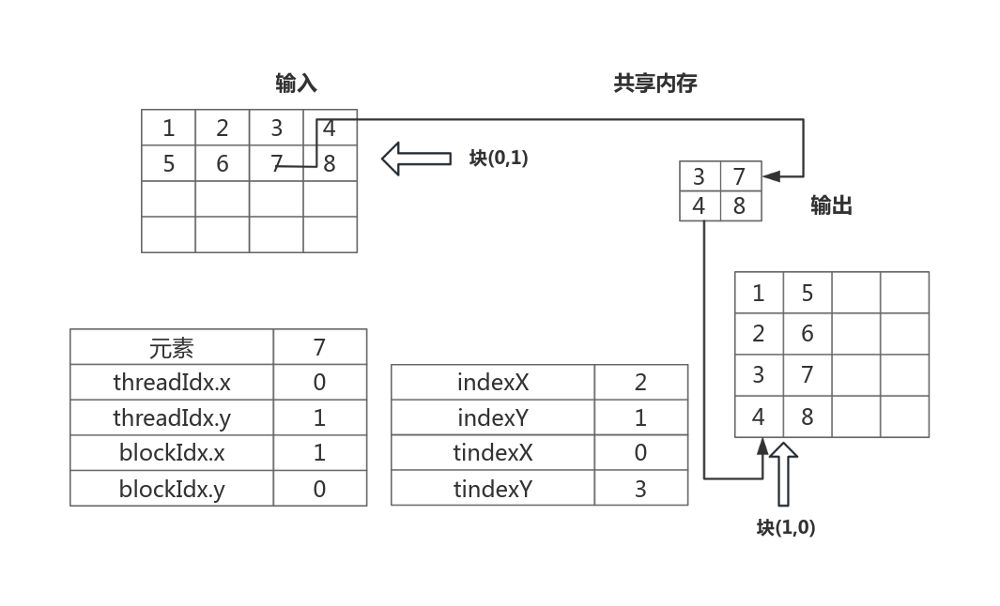
7.1.2.1 📌 准备工作：基础参数对齐¶
从图中我们可以直观地得出以下硬件和矩阵参数：
- 矩阵总宽度：N = 4
- 线程块大小：
BLOCK_SIZE = 2（即每个线程块是 2 \times 2 的网格，共有 4 个线程） - 主角元素
7对应的线程信息（如左下角表格所示）：- 块内坐标：
threadIdx.x = 0,threadIdx.y = 1 - 网格块坐标：
blockIdx.x = 1,blockIdx.y = 0
- 块内坐标：
7.1.2.2. 第一阶段：全局合并读取 \rightarrow 写入共享内存¶
int indexX = threadIdx.x + blockIdx.x * blockDim.x; // 0 + 1 * 2 = 2
int indexY = threadIdx.y + blockIdx.y * blockDim.y; // 1 + 0 * 2 = 1
int index = indexY * N + indexX; // 1 * 4 + 2 = 6
- 算全局输入索引：算出来元素
7在一维input数组里的位置是6（即输入矩阵的第 1 行、第 2 列，确实是元素7）。
sharedMemory[threadIdx.x][threadIdx.y] = input[index];
- 搬运到共享内存(转置)：线程
(0, 1)负责把7读出来，塞进共享内存的[0][1]位置：
- 同期协作：同 Block 的其他 3 个线程也干了同样的事，此时共享内存
sharedMemory（2 \times 2）里整整齐齐地躺着这四个数：
__syncthreads();
- 同步：线程
(0, 1)在这里踩下刹车，确保3, 4, 7, 8四个数全部安全写入了共享内存，才能进入下一步。
7.1.2.3. 第二阶段：计算转置后的全局输出位置¶
现在，我们要把共享内存里的数据写回全局内存 output。转置要求：输入矩阵里属于“块(0,1)”的数据，转置后应该落入输出矩阵的“块(1,0)”。
代码通过颠倒 blockIdx 实现了块级别的对调：
int tindexX = threadIdx.x + blockIdx.y * blockDim.y; // 0 + 0 * 2 = 0
int tindexY = threadIdx.y + blockIdx.x * blockDim.x; // 1 + 1 * 2 = 3
int transposedIndex = tindexY * N + tindexX; // 3 * 4 + 0 = 12
- 算全局输出索引：算出来线程
(0, 1)负责写入的全局output物理地址是12（即输出矩阵的第 3 行、第 0 列）。 - 关键看点：在这个输出位置上，连续的线程写入时
tindexX是连续的（因为只有threadIdx.x参与了计算），从而保证了 全局内存合并写入。
7.1.2.4. 第三阶段：巧妙地“错位”写回全局内存¶
output[transposedIndex] = sharedMemory[threadIdx.y][threadIdx.x];
由于我们刚刚算出来，线程 (0, 1) 要负责写入 transposedIndex = 12（输出矩阵的第 3 行、第 0 列）。
但是，它写入的数据却 不是 它刚才读入的 7！
- 线程
(0, 1)去读取共享内存的[threadIdx.y][threadIdx.x]，即sharedMemory[1][0]。 - 在共享内存里，
sharedMemory[1][0]存放的值其实是4。 - 最终执行：线程
(0, 1)将4写入到output[12]（输出矩阵第 3 行、第 0 列）。 - 那么主角
7去哪了？ 此时，另一个线程(1, 0)正在计算它自己的输出位置：其tindexX = 1，tindexY = 2（对应输出矩阵的第 2 行、第 1 列）。 它去读取sharedMemory[0][1]，刚好拿到了7，并将其写入了输出矩阵的第 2 行、第 1 列！
💡 总结¶
通过这个例子可以清晰地看到：
- 元素
7是由 线程(0, 1)从输入矩阵搬到共享内存的。 - 数据进入共享内存暂存并完成对调后，元素
7最终是由 线程(1, 0)亲手写回到输出矩阵的。
这种“我帮你读，你帮我写”的精妙配合，用极小的片上换手代价（共享内存），彻底解决了全局内存的非合并写入痛点。
7.2 Profile¶
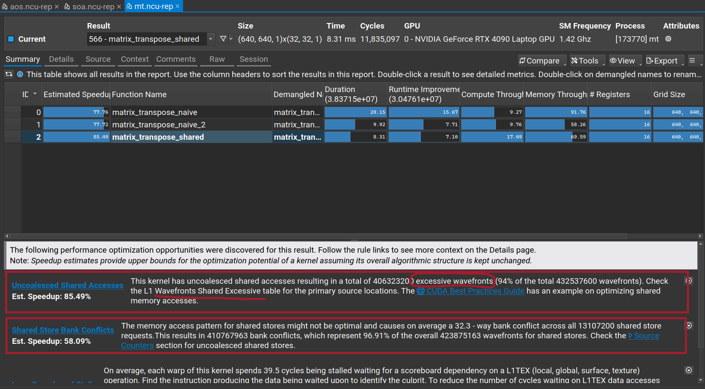
7.2.1. 什么是 "Excessive Wavefronts"（过多的波前）？¶
在 NVIDIA GPU 硬件中，当一个 Warp（32个线程）请求访问共享内存时，显存控制器不会管你代码里写的是不是数组，它只看这 32 个线程请求的 物理 Bank 映射。
- 理想情况（1 个 Wavefront）：如果 32 个线程访问的地址刚好映射到 32 个不同的 Banks，硬件只需要 发射一次访问波前（1 Wavefront），就能把 32 个人的数据同时拿完。
- 冲突情况（多个 Wavefronts）：如果多个线程撞到了同一个 Bank 的不同行（即发生 Bank Conflict），硬件无法并行处理，只能把这次请求拆分成多次发射（多个 Wavefronts）去串行读取。
NCU 提示的 94% excessive wavefronts 意思就是：你原本可以让硬件只跑 1 趟就能解决的共享内存读写，由于银行冲突太严重，硬件硬生生多跑了 94% 的冤枉路（串行排队）才把数据收集齐。
7.2.2. 罪魁祸首——Bank Conflict¶
我们再次审视核函数中的第一步写入：
sharedMemory[threadIdx.x][threadIdx.y] = input[index];
在同一时刻，同一个 Warp 内部的 32 个线程：
threadIdx.y是 完全相同 的（假设为 0）。threadIdx.x是 连续递增 的（从 0 到 31）。
代入到二维共享内存中，这 32 个线程访问的连续空间变成了：
sharedMemory[0][0], sharedMemory[1][0], sharedMemory[2][0], ... sharedMemory[31][0]。
由于在 C/CUDA 的二维数组中，改变第一维（行索引）意味着内存地址产生巨大的跨步。
列宽 BLOCK_SIZE = 32。这意味着 sharedMemory[1][0] 和 sharedMemory[0][0] 在内存中整整相差了 32 个 int（128 字节）。
在 GPU 共享内存的硬件映射中，任何相差 32 个元素（或其倍数）的物理地址，必然被映射到同一个 Bank 之中。
结果就是：Warp 里的 32 个线程，其计算出来的共享内存地址全部挤在同一个 Bank（Bank 0）里！ 这触发了硬件极限的 32路银行冲突（32-way Bank Conflict）。
原本 1 个 Wavefront 就能搞定的事情，在写入共享内存时被拆成了 32 个 Wavefronts 串行执行。这就是 NCU 疯狂报错的原因。
7.2.3. 解决方法：Padding 技术¶
既然是因为列宽是 32 的倍数导致地址刚好撞在同一个 Bank，那我们把列宽 加 1，破坏这种完美的整除对齐：
// 唯一需要修改的一行：把 [32][32] 改为 [32][32 + 1]
__shared__ int sharedMemory[BLOCK_SIZE][BLOCK_SIZE + 1];
为什么加了 1 冲突就神奇消失了？
当列宽变成 33 之后：
sharedMemory[0][0]映射在 Bank 0。sharedMemory[1][0]的一维偏移量变成了 1 \times 33 + 0 = 33。因为 33 \pmod{32} = 1，它被挪到了 Bank 1！sharedMemory[2][0]的一维偏移量变成了 2 \times 33 + 0 = 66。因为 66 \pmod{32} = 2，它被挪到了 Bank 2！
通过多申请这一列完全不用的空房间（Padding），32 个线程写入时对应的 Bank 奇迹般地 完全错开、整齐排列在 Bank 0 到 Bank 31 中。
7.2.4 改进后的profiling结果¶
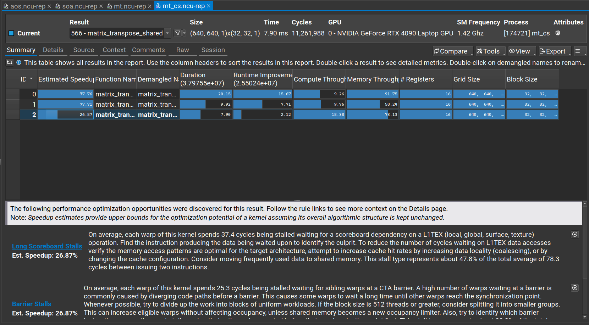
可以看到，没有提示Bank Conflict了。
我们再看看优化建议：“片上的内伤（Bank Conflict）虽然治好了，但这个核函数现在有将近一半的时间（47.8%），线程都在原地‘发呆’，苦苦等待数据从显存（Global Memory）运过来。”
7.2.4.1. 什么是 "Scoreboard Dependency on a L1TEX"?¶
在 GPU 硬件中，当一个 Warp 发射了一条从全局内存（显存）读取数据的指令（如 input[index]）后，由于显存延迟很高（数百个周期），执行指令的线程 不能立刻拿到数据。
为了追踪这些还没到货的数据，GPU 内部有一个叫 Scoreboard（计分板） 的硬件机制。
- 当一条指令需要用到还没到货的数据时（例如紧接着要把读到的数据写入共享内存
sharedMemory[x][y] = input[index]），计分板就会对这个 Warp 踩刹车，不准它继续往下走。 - 这就叫 Scoreboard Dependency Stall（计分板依赖等待）。
NCU 提示每条指令平均等待 78.3 个周期，其中有 37.4 个周期（47.8%） 全是在等全局内存（L1TEX 缓存/显存）的指令落盘。
7.2.4.2. 已经用了共享内存，为什么还会卡在这里？¶
// 1. 发射显存读取请求 (L1TEX Operation)
int value = input[index];
// 2. 必须等 value 真的从显存运到寄存器，才能写入共享内存
// 核心卡顿点：这里触发了 Scoreboard Stall，全员原地等数据！
sharedMemory[localIndexX][localIndexY] = value;
__syncthreads();
矩阵转置是一个 纯纯的数据搬运工（Memory-Bound 算子）。它内部没有任何复杂的数学计算（比如它不像矩阵乘法那样，读出数据后还要做大量的乘加运算来掩盖延迟）。
它一上来的第一步就是向显存要 1.6 GB 的数据。无论你的共享内存有多快、Padding 做得有多完美，巧妇难为无米之炊，在第一步“数据从显存运进芯片”的物理延迟上，全员线程必须硬生生等足 30 多个周期。这就是为什么次要矛盾（Bank Conflict）消灭后，主要矛盾（显存延迟）彻底暴露了出来。
7.2.5. 终极优化手段¶
🛠️ 方案 A：使用异步拷贝指令（Async Copy / cp.async）¶
如果你使用的是 Ampere 架构及以上（如 A100, RTX 30系/40系），硬件提供了一个指令：cuda::memcpy_async。
- 传统做法：显存 \rightarrow 通用寄存器（Warp 在这里卡顿等待） \rightarrow 共享内存。
- 异步拷贝：显存 \rightarrow 直接打通管道灌入 \rightarrow 共享内存。 数据直接从显存绕过寄存器进入共享内存，中途完全不需要 Warp 参与和等待，从而把这 47.8% 的 Scoreboard 挂起时间直接硬件级抹平。
🛠️ 方案 B：扩大每个线程的吞吐量（Vectorized Access / 大宽带矢量读写）¶
目前的做法是每个线程搬运一个 4 字节的 int。我们可以让一个线程一次性搬运 4 个 int（通过 int4 或者 float4 类型），利用 128 位的向量指令。
// 强制编译器生成 LDG.128 指令，单次发射搬运 16 字节
int4 data = reinterpret_cast<int4*>(input)[global_ptr];
- 原理：用更少的指令数量，一次性捞起更多的连续显存数据，能够极大地提升 L1TEX 缓存的行利用率，从而减少计分板（Scoreboard）的整体排队次数。
🛠️ 方案 C：多级流水线与双缓冲（Double Buffering）¶
让线程块同时处理两个 Tiles（方块 0 和 方块 1）。当线程在苦苦等待方块 0 的显存数据时，立刻切去发射方块 1 的指令。通过在片上开辟双倍的共享内存空间，实现“读写流水线化”，用计算掩盖搬运延迟。
7.3 📊 矩阵转置性能测试结果对比表¶
| 显卡 | 程序版本 (Binary) | Naive (ms) | Naive2 (ms) | Shared (ms) |
|---|---|---|---|---|
| RTX 4090 Lattop | ./mt |
15.73 | 9.45 | 8.80 |
./mt_cs (无银行冲突) |
17.62 | 9.45 | 8.75 | |
| 很老的GPU | ./mt |
131.04 | 65.54 | 53.37 |
./mt_cs (无银行冲突) |
105.26 | 65.55 | 26.69 | |
| Tesla T4 | ./mt |
78.81 | 43.21 | 49.03 |
./mt_cs (无银行冲突) |
92.94 | 43.20 | 19.76 | |
| Tesla V100 | ./mt |
19.98 | 7.39 | 6.36 |
./mt_cs (无银行冲突) |
21.49 | 7.54 | 5.51 | |
| NVIDIA A100 | ./mt |
13.57 | 4.24 | 4.74 |
./mt_cs (无银行冲突) |
13.57 | 4.24 | 3.05 |
7.3.1. 为什么 Naive1 这么慢？（非合并写无法被缓存优化）¶
在 matrix_transpose_naive（即 Naive1）中，Warp（32个线程）同时执行 写入 操作：
output[indexX * N + indexY]
此时，相邻线程写入的地址在显存里隔了 20480 \times 4 \text{ 字节} = 80 \text{ KB}。
- L1/L2 缓存直接失效：GPU 的 L1/L2 缓存是按 Cache Line（通常是 32 或 128 字节） 组织和写入的。一个 Warp 的 32 个线程要写 32 个相隔甚远的物理地址，意味着需要同时修改 32 个不同的 Cache Line。
- 内存事务爆炸：显存控制器（Memory Controller）被迫把这一条写入指令拆分成 32 个完全独立的显存写入事务。更糟糕的是，这是写入（Store）操作，GPU 必须真正把数据推回到外部显存（DRAM），这会造成极其严重的物理写带宽拥堵和排队挂起。
7.3.2. 逆袭的秘密：为什么 Naive2 能这么快？（L2 缓存完美救场）¶
在 matrix_transpose_naive_2 中，访问关系反过来了：读取是非合并的，写入是合并的。
7.3.2.1 写入端的满带宽（Coalesced Write）¶
output[indexY * N + indexX] 实现了 完美合并写入。一个 Warp 里的 32 个线程在同一时刻连续写入 128 字节的空间，刚好填满一个内存事务。这就直接把最容易拥堵的“写显存”链路彻底解放了出来。
7.3.2.2 读取端的“老本行”：L2 缓存大显身手（L2 Cache Hit）¶
那么 Naive2 的非合并读取 input[indexX * N + indexY] 为什么没有拖垮性能？
当第 0 个 Block 读取显存时，它的 32 个线程读取了第 0 列的 32 个元素。虽然线程是纵向读的，但 GPU 从外部显存拿数据时，不可能只拿单独一个 int，而是 按 Cache Line 横向捞一网（捞走 32/128 字节）。
结果就是，GPU 读走这 32 个纵向元素的同时，顺便把这些元素右边相邻的几列数据也一起带进了高速 L2 缓存。
由于网格（Grid）划分得非常密集，紧接着执行的第 1 个 Block（或者同个 Block 的下一批线程束）去读取第 1 列的相邻数据时，GPU 惊喜地发现：这些数据刚刚已经被上一个 Block 顺便捞进 L2 缓存了，直接命中！
- 结论：
Naive2虽然在指令层面上是非合并读取，但得益于大矩阵极高的 空间局部性（Spatial Locality），它的非合并读实际上高概率命中了高速 L2 缓存，并没有频繁去触发昂贵的显存（DRAM）物理搬运。
7.3.2.3 📋 三者底层硬件代价对比¶
从指令和硬件层面，我们可以清楚地看出它们的本质区别：
| 核函数 | 全局读（Load） | 全局写（Store） | 性能决定因素 |
|---|---|---|---|
Naive1 (./mt) |
🟢 完美合并 (DRAM) | 🔴 极度离散 (DRAM) | 被 物理显存写入带宽 死死卡住 |
Naive2 (./mt) |
🔴 离散（但高概率 命中 L2） | 🟢 完美合并 (DRAM) | 依赖 L2 缓存的吞吐量（现代卡 L2 很大） |
Shared (./mt_cs) |
🟢 完美合并 (DRAM) | 🟢 完美合并 (DRAM) | 纯粹消耗 Shared Memory 内部带宽（最快） |
在 CUDA 性能优化中，有一条铁律：如果必须在“非合并读”和“非合并写”之间二选一，永远选择非合并读（即 Naive2）。 读延迟可以靠强大的 L2 缓存和 Warp 调度切换来掩盖，但物理上天女散花般的写显存带宽瓶颈，硬件是无法凭空凭空抹平的。
8. 常量内存¶
参考附录。
9. 只读/纹理内存¶
参考附录。
10. GPU 存储架构的硬件演进与编程范式重塑¶
10.1. GPU 显存世代的演进规律¶
GPU 架构随时间不断推移演进，其存储架构（Memory Architecture）也发生了翻天覆地的变化。如果我们横跨最近的数个硬件世代（从早期的 Kepler 一直观察到如今最新的 Blackwell 架构），可以总结出两条贯穿始终的物理演进规律：
- 显存容量在各个层级上普遍呈阶梯式增加。
- 显存带宽与高速缓存容量随着新一代架构的推出而大幅度提升。
下表详细对比了经典世代到近代计算卡的关键存储属性：
| 存储类型 | 属性指标 | Blackwell B200 | Hopper H100 | Ampere A100 | Volta V100 | Pascal P100 |
|---|---|---|---|---|---|---|
| 寄存器 (Register) | 每 SM 大小 | 未公开 | 256 KB | 256 KB | 256 KB | 256 KB |
| L1 缓存 / 共享内存 (统一化架构) |
每 SM 最大可用容量 | Up to 320 KB | Up to 256 KB | Up to 192 KB | Up to 128 KB | 24 KB (L1) 64 KB (Shared) |
| L2 缓存 (L2 Cache) | 总容量 | 60 MB | 50 MB | 40 MB | 6.14 MB | 4.09 MB |
| 全局内存 (Global Mem) | 显存类型 | HBM3e | HBM3 / HBM3e | HBM2 | HBM2 | HBM2 |
| 最大理论带宽 | Up to 8.0 TB/s | 3.35 - 4.8 TB/s | 1.6 - 2.0 TB/s | 900 GB/s | 732 GB/s |
总体而言，上述硬件指标的暴力提升能够让绝大多数 CUDA 应用程序在新架构上“免费”获得性能增益。但为了彻底释放新硬件的吞吐极限并减轻开发者的负担，NVIDIA 在提升物理参数的同时，对 CUDA 编程模型 和 底层访存流水线 进行了多次根本性的颠覆。
10.2. 早期编程范式的简化（Kepler 到 Pascal）¶
在早期世代中，优化往往意味着极其繁琐的手动内存绑定。以纹理内存（Texture Memory）为例：在 CUDA 5.0 之前，开发者必须在全局空间显式声明纹理，并在运行时手动执行硬件绑定（Bind）和解绑（Unbind）操作。自 CUDA 5.0 引入表面对象（Surface Objects）与全局定时器后，这些流程式的限制被彻底移除，极大地释放了图像与网格计算算子的生产力。
在这一阶段，性能调优的核心圣经是“合并访问（Coalesced Access）”与 “消除银行冲突（Bank Conflict）”。开发者需要花费大量精力手写 __shared__ 相对索引，甚至引入列宽 Padding（如 [32][33]）来强行扭转数据的物理对齐，以规避共享内存的 32 路撞车。
10.3. Volta 的统一缓存革命：从手动到自动¶
2017 年 Volta (V100) 架构的诞生，带来了现代 GPU 存储体系中第一次具有里程碑意义的变革——L1 缓存与共享内存的统一化设计（Unification）。
10.3.1 性能的“自动驾驶”¶
在 Pascal 之前，L1 缓存与共享内存使用完全独立的物理硬件硬件。而 Volta 首次将两者融合进同一个片上动态数据缓存区（可配置为 128 KB/SM，比 Pascal 提升了 7 倍）。由于统一后的 L1 缓存拥有了与共享内存完全相同的硬件低延迟与高带宽，它允许 L1 缓存的自动硬件操作直接获得过去只有手动控制共享内存才能达到的极限性能。
10.3.2 极客程序员（Ninja Programmers）的定位转换¶
共享内存的核心痛点在于需要开发者显式地去申请、同步（__syncthreads()）和控制。在 Volta 统一大缓存推出后，许多传统的 Memory-Bound（访存受限）应用无需进行高门槛的 Shared Memory 手工重构，就能通过 L1 缓存的自动空间局部性（Spatial Locality）复用获得接近顶格的加速比。
当然，这并不意味着共享内存退出了历史舞台。对于追求极致（Extract every inch of performance）的“极客程序员（Ninja Programmers）”而言，手写共享内存依然是实现极限算子融合（Kernel Fusion）的必备手段。
10.4. 后 Volta 时代大模型浪潮下的存储体系重塑¶
随着大语言模型（LLM）与 Transformer 架构在工业界的全面爆发，计算算子对片上带宽和数据吞吐提出了几近压榨的要求。从 2020 年至今，GPU 存储架构历经三代演进，演化出了完全超越 Volta 时代的尖端硬核特性：
10.4.1. Ampere 架构 (A100)：硬件级异步拷贝与 L2 持久化¶
- 旁路寄存器（Bypass Register）的异步拷贝 (
cp.async)：在 Volta 及之前，数据从显存搬运到共享内存，必须经过“显存 \rightarrow 通用寄存器 \rightarrow 共享内存”的传统两步路线。这不仅无端消耗了双倍的指令发射带宽，还导致寄存器堆（Register File）严重拥堵，拉低了活跃线程束（Occupancy）。Ampere 引入了硬件级异步拷贝，让数据在后台绕过寄存器直接灌入共享内存，使多阶段流水线（Multi-stage Pipelining）与双缓冲（Double Buffering）在工业界大放异彩。 - L2 缓存的 10 倍暴增与持久化：A100 的 L2 缓存从 V100 的 6 MB 暴增至 40 MB，并引入了 L2 缓存持久化（L2 Cache Persistency）。程序员可以强行指定一部分 L2 空间常驻高频复用的 Tensor（如 GEMM 矩阵乘中的部分权重），防止其被一览性的流动数据冲刷淘汰。
10.4.2. Hopper 架构 (H100)：分布式共享内存与 TMA 自动化¶
- 分布式共享内存（DSem, Distributed Shared Memory）：在传统的 CUDA 模型中，共享内存属于 SM 内部的绝对“私有财产”，跨 Block 通信必须惨烈地写回外部显存再行读出。Hopper 打破了这一壁垒，通过引入线程块集群（Thread Block Cluster）与片上高速互联网络（NoC），允许同一个集群内的不同 SM 直接跨核相互读写对方的共享内存。这一技术彻底解放了类似 FlashAttention-3 等大模型核心算子的跨块协作效率。
- TMA（张量内存加速器）：在 Ampere 阶段，即便使用
cp.async异步搬运，每个线程依然需要执行繁琐的指针多维地址计算。Hopper 引入了专用的硬件 DMA 引擎——TMA。开发者只需在软件端声明一个高维张量的 Layout 描述符，TMA 就会在底层 实现全自动的、按块（Tile-based）的多维数据双向异步搬运，线程无需再耗费算力去算物理地址。
10.4.3. Blackwell 架构：超大显存池与集群级内存解耦¶
- 8.0 TB/s 的 HBM3e 吞吐吞吐：Blackwell 将物理显存带宽推向了不可思议的 8.0 TB/s 高度，几乎彻底喂饱和消解了大规模混合精度（FP8/FP4）下张量核心（Tensor Cores）的访存饥饿。
- 统一化机柜内存解耦（NVLink 5）：在最新的超算节点（如 GB200）中，“显存”的物理边界被彻底打破。借助高达 1.8 TB/s 的双向 NVLink 5 网络，由 72 颗 GPU 组成的机柜集群在软件视界中可直接通过 统一内存空间（Unified Memory） 转化为一个超大型、全解耦的共享显存池。